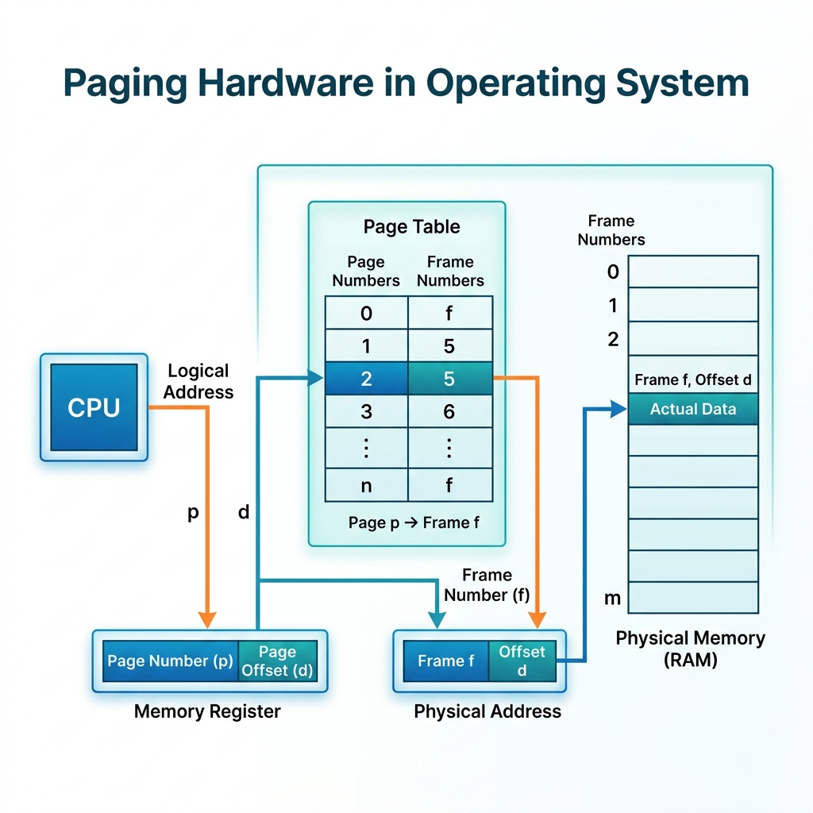
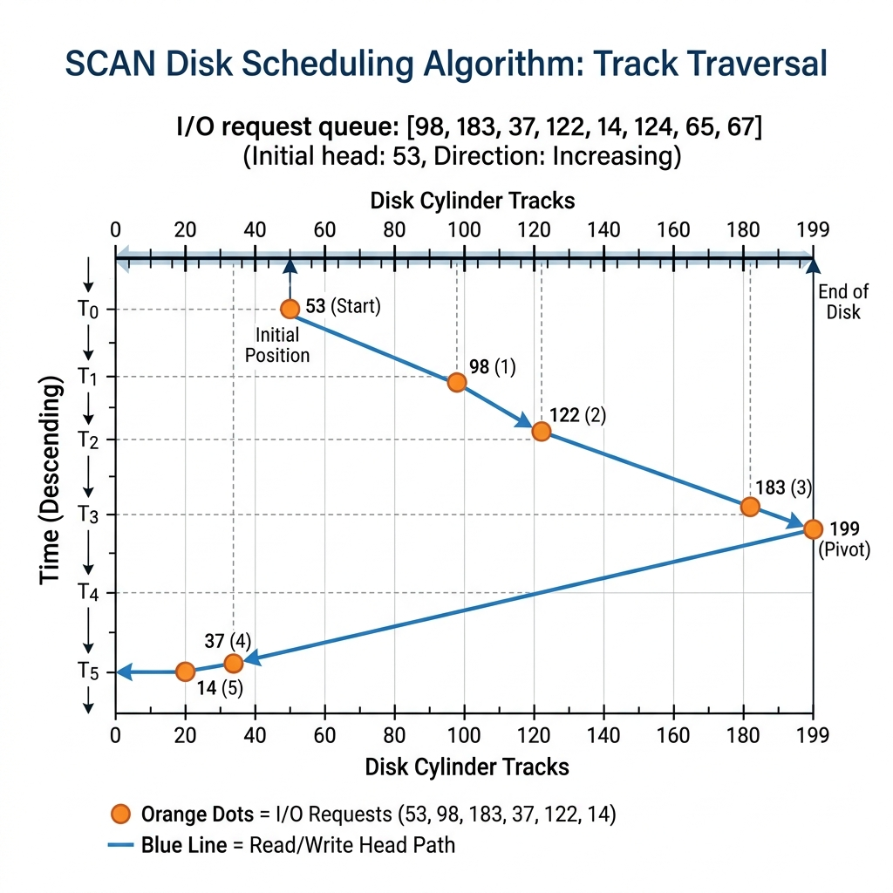
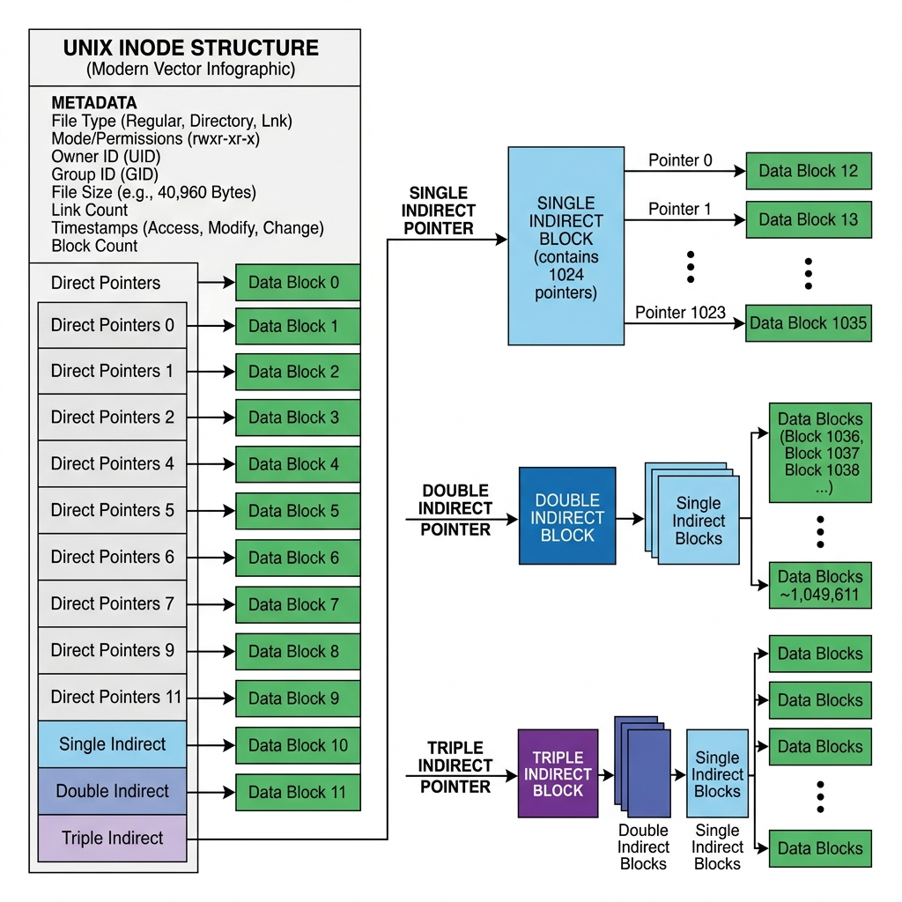

Group A — Short Answer Questions (1 Mark Each)
Ans: Concise point-wise definition/formula for Define an Operating System. in accordance with MAKAUT examination pattern.
Ans: Concise point-wise definition/formula for What is Kernel in Operating System? in accordance with MAKAUT examination pattern.
Ans: Concise point-wise definition/formula for Define System Call. in accordance with MAKAUT examination pattern.
Ans: Concise point-wise definition/formula for What is Process Control Block (PCB)? in accordance with MAKAUT examination pattern.
Ans: Concise point-wise definition/formula for Define Process State. in accordance with MAKAUT examination pattern.
Ans: Concise point-wise definition/formula for What is Context Switching? in accordance with MAKAUT examination pattern.
Ans: Concise point-wise definition/formula for Define Throughput in CPU scheduling. in accordance with MAKAUT examination pattern.
Ans: Concise point-wise definition/formula for Define Turnaround Time. in accordance with MAKAUT examination pattern.
Ans: Concise point-wise definition/formula for Define Waiting Time. in accordance with MAKAUT examination pattern.
Ans: Concise point-wise definition/formula for Define Response Time. in accordance with MAKAUT examination pattern.
Ans: Concise point-wise definition/formula for What is FCFS Scheduling? in accordance with MAKAUT examination pattern.
Ans: Concise point-wise definition/formula for What is Convoy Effect? in accordance with MAKAUT examination pattern.
Ans: Concise point-wise definition/formula for What is Shortest Job First (SJF) scheduling? in accordance with MAKAUT examination pattern.
Ans: Concise point-wise definition/formula for What is Shortest Remaining Time First (SRTF)? in accordance with MAKAUT examination pattern.
Ans: Concise point-wise definition/formula for What is Round Robin (RR) scheduling? in accordance with MAKAUT examination pattern.
Ans: Concise point-wise definition/formula for Define Time Quantum. in accordance with MAKAUT examination pattern.
Ans: Concise point-wise definition/formula for What is Priority Scheduling? in accordance with MAKAUT examination pattern.
Ans: Concise point-wise definition/formula for What is Starvation in CPU scheduling? in accordance with MAKAUT examination pattern.
Ans: Concise point-wise definition/formula for Define Aging technique. in accordance with MAKAUT examination pattern.
Ans: Concise point-wise definition/formula for What is Multilevel Queue Scheduling? in accordance with MAKAUT examination pattern.
Ans: Concise point-wise definition/formula for Define Critical Section. in accordance with MAKAUT examination pattern.
Ans: Concise point-wise definition/formula for What is Mutual Exclusion? in accordance with MAKAUT examination pattern.
Ans: Concise point-wise definition/formula for Define Progress requirement in critical section. in accordance with MAKAUT examination pattern.
Ans: Concise point-wise definition/formula for Define Bounded Waiting requirement. in accordance with MAKAUT examination pattern.
Ans: Concise point-wise definition/formula for What is Semaphore? in accordance with MAKAUT examination pattern.
Ans: Concise point-wise definition/formula for What is Binary Semaphore / Mutex? in accordance with MAKAUT examination pattern.
Ans: Concise point-wise definition/formula for What is Counting Semaphore? in accordance with MAKAUT examination pattern.
Ans: Concise point-wise definition/formula for Define Busy Waiting / Spinlock. in accordance with MAKAUT examination pattern.
Ans: Concise point-wise definition/formula for What is Deadlock? in accordance with MAKAUT examination pattern.
Ans: Concise point-wise definition/formula for Name 4 necessary conditions for Deadlock. in accordance with MAKAUT examination pattern.
Ans: Concise point-wise definition/formula for What is Resource Allocation Graph (RAG)? in accordance with MAKAUT examination pattern.
Ans: Concise point-wise definition/formula for What is Deadlock Prevention? in accordance with MAKAUT examination pattern.
Ans: Concise point-wise definition/formula for What is Deadlock Avoidance? in accordance with MAKAUT examination pattern.
Ans: Concise point-wise definition/formula for What is Banker's Algorithm? in accordance with MAKAUT examination pattern.
Ans: Concise point-wise definition/formula for Define Safe State in deadlock avoidance. --- Page 2 --- in accordance with MAKAUT examination pattern.
Ans: Concise point-wise definition/formula for What is Paging in memory management? in accordance with MAKAUT examination pattern.
Ans: Concise point-wise definition/formula for Define Page and Frame. in accordance with MAKAUT examination pattern.
Ans: Concise point-wise definition/formula for What is Page Table? in accordance with MAKAUT examination pattern.
Ans: Concise point-wise definition/formula for What is Translation Lookaside Buffer (TLB)? in accordance with MAKAUT examination pattern.
Ans: Concise point-wise definition/formula for Define Internal Fragmentation. in accordance with MAKAUT examination pattern.
Ans: Concise point-wise definition/formula for Define External Fragmentation. in accordance with MAKAUT examination pattern.
Ans: Concise point-wise definition/formula for What is Virtual Memory? in accordance with MAKAUT examination pattern.
Ans: Concise point-wise definition/formula for Define Page Fault. in accordance with MAKAUT examination pattern.
Ans: Concise point-wise definition/formula for What is Demand Paging? in accordance with MAKAUT examination pattern.
Ans: Concise point-wise definition/formula for Define Belady's Anomaly. in accordance with MAKAUT examination pattern.
Ans: Concise point-wise definition/formula for What is Thrashing? in accordance with MAKAUT examination pattern.
Ans: Concise point-wise definition/formula for Define Working Set Model. in accordance with MAKAUT examination pattern.
Ans: Concise point-wise definition/formula for What is SSTF Disk Scheduling? in accordance with MAKAUT examination pattern.
Ans: Concise point-wise definition/formula for What is SCAN Disk Scheduling? in accordance with MAKAUT examination pattern.
Ans: Concise point-wise definition/formula for What is C-SCAN Disk Scheduling? in accordance with MAKAUT examination pattern.
Ans: Concise point-wise definition/formula for Define Inode in UNIX file system. in accordance with MAKAUT examination pattern.
Ans: Concise point-wise definition/formula for What is Zombie Process? in accordance with MAKAUT examination pattern.
Ans: Concise point-wise definition/formula for What is Orphan Process? in accordance with MAKAUT examination pattern.
Group B — Medium / Descriptive Questions (5 Marks Each)
Detailed 5-Mark Solution:
1. Definition: A process moves through a well-defined set of states from creation to termination. Five standard states are recognised: New, Ready, Running, Waiting (Blocked), and Terminated.
Fig: Five-state process model — New → Ready → Running → Terminated, with Running ↔ Waiting for I/O/event and Running → Ready on time-slice expiry.
2. State Description:
- New: Process is being created; OS allocates PCB but has not admitted it to the ready queue.
- Ready: Process has all resources except the CPU and waits in the ready queue for the scheduler to pick it.
- Running: Instructions are being executed by the CPU (only one process per core at a time).
- Waiting/Blocked: Process cannot proceed until an event occurs (I/O completion, signal, resource availability).
- Terminated: Process has finished execution; OS reclaims its PCB and resources.
3. Transitions: New→Ready (admitted), Ready→Running (dispatched by scheduler), Running→Ready (interrupt/time quantum expiry), Running→Waiting (I/O or event wait), Waiting→Ready (I/O or event completion), Running→Terminated (exit).
Detailed 5-Mark Solution:
These four metrics judge how good a CPU-scheduling algorithm is:
- Throughput: Number of processes completed per unit time. Higher is better (measures overall system productivity).
- Turnaround Time (TAT): Total time from submission to completion. TAT = Completion Time − Arrival Time. Lower is better.
- Waiting Time (WT): Total time a process spends in the ready queue waiting for the CPU. WT = TAT − Burst Time. Lower is better.
- Response Time (RT): Time from submission until the first response/CPU allocation (not completion). RT = First CPU allocation time − Arrival Time. Critical for interactive systems.
Relation & Goals: A scheduler generally tries to maximize CPU utilization and throughput while minimizing turnaround time, waiting time, and response time — but these goals often conflict (e.g. maximizing throughput via long time slices increases response time), so real schedulers trade off between them depending on whether the system is batch-oriented (favours turnaround/throughput) or interactive (favours response time).
Detailed 5-Mark Solution:
1. Algorithm: FCFS (First-Come-First-Served) executes processes strictly in order of arrival, non-preemptively, using a simple FIFO ready queue.
2. Given: Arrival time = 0 for all. P1=6ms, P2=8ms, P3=7ms, P4=3ms.
| Process | Burst | Start | Completion | TAT | WT |
|---|---|---|---|---|---|
| P1 | 6 | 0 | 6 | 6 | 0 |
| P2 | 8 | 6 | 14 | 14 | 6 |
| P3 | 7 | 14 | 21 | 21 | 14 |
| P4 | 3 | 21 | 24 | 24 | 21 |
Fig: FCFS Gantt chart — strict arrival order, no reordering.
3. Result: Average TAT = (6+14+21+24)/4 = 16.25 ms. Average WT = (0+6+14+21)/4 = 10.25 ms. Notice P2 (8ms, longer job) running before P4 (3ms) creates the convoy effect — a long job delays all shorter jobs behind it, inflating average waiting time.
Detailed 5-Mark Solution:
1. SJF (non-preemptive): Once started, a process runs to completion. At each scheduling point, the ready process with the smallest total burst time is picked. Optimal for minimizing average waiting time among non-preemptive algorithms, but needs the burst time known/estimated in advance.
2. SRTF (Shortest Remaining Time First): The preemptive version of SJF. If a new process arrives with a burst shorter than the remaining time of the currently running process, the CPU is preempted immediately and given to the new arrival.
| Aspect | SJF (Non-preemptive) | SRTF (Preemptive) |
|---|---|---|
| Preemption | No — runs to completion | Yes — on shorter arrival |
| Avg Waiting Time | Optimal among non-preemptive | Optimal among all algorithms (theoretically minimum) |
| Overhead | Low (no context switch mid-burst) | Higher (frequent context switches) |
| Starvation | Possible for long jobs | More likely for long jobs (repeatedly preempted) |
| Response time | Poor for long jobs waiting | Better — reacts to new short jobs instantly |
3. Key point: Both need burst-time knowledge, usually predicted using exponential averaging of past bursts in real systems (since future burst length isn't truly known); pure SJF/SRTF are mainly theoretical benchmarks for minimum achievable waiting time.
Detailed 5-Mark Solution:
1. Round Robin (RR): Each process gets the CPU for a fixed time quantum (q). If it doesn't finish within q, it is preempted and placed at the back of the ready queue (FIFO). Designed for time-sharing systems to give fair, uniform response.
2. Effect of Quantum Size:
- Very large q (≥ max burst): RR degenerates into FCFS — poor response time for later processes.
- Very small q: Response time improves, but context-switch overhead dominates — a large fraction of CPU time is wasted switching rather than executing (throughput drops).
- Well-chosen q (rule of thumb: 80% of bursts should complete within one quantum): balances fairness and overhead — this is the practical tuning goal.
3. Example (q=4): P1(24ms), P2(3ms), P3(3ms) — P1 runs 0-4, P2 runs 4-7 (finishes), P3 runs 7-10 (finishes), P1 resumes 10-30. Short jobs P2, P3 finish quickly despite arriving with a long job P1 present — RR avoids the convoy effect of FCFS.
4. Property: RR gives no process more than (n−1)×q wait before its next turn (n = number of ready processes) — bounded waiting, but average TAT can be worse than SJF for CPU-bound-heavy mixes.
Detailed 5-Mark Solution:
1. Critical Section: A segment of code where a process accesses shared resources (variables, files, data structures) that must not be concurrently accessed by more than one process. Any valid solution to the Critical Section Problem must satisfy three requirements:
- Mutual Exclusion: If a process is executing in its critical section, no other process may execute in its critical section at the same time.
- Progress: If no process is in its critical section and some processes wish to enter, only those processes not executing in their remainder section can participate in deciding who enters next — and this decision cannot be postponed indefinitely.
- Bounded Waiting: There exists a bound on the number of times other processes are allowed to enter their critical sections after a process has made a request to enter its own, and before that request is granted — prevents starvation.
2. General Structure: Every process follows: entry section → critical section → exit section → remainder section. The entry/exit sections implement the synchronization logic (locks, semaphores, etc.) that enforces the three properties above.
3. Significance: Every synchronization tool — Peterson's Solution, hardware TestAndSet/Swap, semaphores, monitors — is judged against these exact three criteria to prove correctness.
Detailed 5-Mark Solution:
1. Setup: Two processes Pi and Pj share: int turn; and boolean flag[2];. flag[i] = true means Pi wants to enter its critical section; turn says whose turn it is when both want in.
2. Why it satisfies all three properties:
- Mutual Exclusion: Both Pi and Pj can enter the while loop only if the other's flag is true; whichever sets turn last is forced to wait, so only one can proceed at a time.
- Progress: A process outside its critical section (flag=false) never blocks the other; the loop condition depends only on the other process's flag and turn.
- Bounded Waiting: After a process exits (flag=false), the other is guaranteed entry next — no process waits more than one turn.
3. Limitation: Peterson's Solution only works for exactly 2 processes and relies on busy-waiting (spinlock); it also isn't guaranteed on modern multiprocessor architectures because of instruction reordering by compilers/CPUs — real systems use hardware primitives (TestAndSet) or OS-level semaphores instead.
Detailed 5-Mark Solution:
1. Semaphore: An integer synchronization variable S accessed only through two atomic operations, historically named wait() (P, from Dutch "proberen") and signal() (V, "verhogen"). Atomicity means no two processes can execute wait/signal on the same S simultaneously.
2. Types:
- Counting semaphore: S can range over an unrestricted domain — used to control access to a resource with several instances (e.g. a pool of N printers, init S=N).
- Binary semaphore / Mutex: S restricted to 0 or 1 — used purely for mutual exclusion (init S=1).
3. Usage pattern for mutual exclusion: wait(mutex); critical section; signal(mutex); — since wait() blocks (decrements below 0 conceptually / suspends) while S≤0, only one process can be inside the section between wait and signal.
4. Better implementation: To avoid CPU-wasting busy-waiting, real OS semaphores use a blocked-process queue: wait() decrements S and, if S<0, adds the calling process to the semaphore's waiting queue and blocks it (context switch); signal() increments S and, if S≤0, wakes one waiting process.
Detailed 5-Mark Solution:
1. Problem: A bounded buffer of size n is shared between a Producer (inserts items) and Consumer (removes items). Producer must not insert when buffer is full; Consumer must not remove when buffer is empty; and access to the buffer must be mutually exclusive.
2. Semaphores used: mutex = 1 (binary, for exclusive buffer access), empty = n (counts empty slots), full = 0 (counts filled slots).
3. Why it works: empty and full together enforce that producer never exceeds capacity and consumer never removes from an empty buffer; mutex ensures the actual insert/remove on the shared buffer index is atomic. Order of wait(empty)/wait(mutex) matters — reversing risks deadlock if buffer is full and consumer can't get mutex either.
Detailed 5-Mark Solution:
1. Problem: A shared data set (e.g. a database) is read by multiple Readers and written by Writers. Multiple readers may access simultaneously (reads don't conflict), but a writer needs exclusive access (no reader or other writer active).
2. Semaphores used (first Readers-Writers, readers-preference): mutex = 1 (protects read_count), wrt = 1 (controls access to the shared resource, held by writer or by the first reader).
3. Behaviour: Any number of readers can read concurrently once the first has locked wrt; a writer must wait until read_count drops to 0. This is the readers-preference variant — writers can starve if readers keep arriving. A writers-preference variant (blocking new readers once a writer is waiting) fixes writer starvation but can starve readers instead.
Detailed 5-Mark Solution:
1. Problem Statement: Five philosophers sit around a circular table with one fork between each pair (5 forks total). A philosopher must hold both the left and right fork to eat, then thinks after eating. It is a classical synchronization problem illustrating deadlock and starvation.
Fig: 5 philosophers, 5 forks (yellow) shared between neighbouring philosophers around the table.
2. Naive Solution & Deadlock: If every philosopher picks the left fork first and then waits for the right fork, and all do this simultaneously, each holds one fork and waits forever for the next — a circular wait, hence deadlock.
3. Deadlock-Avoidance Fixes:
- Resource ordering: Number forks 0–4; each philosopher picks up the lower-numbered fork first — breaks circular wait.
- Limit concurrency: Allow at most 4 philosophers to sit at the table simultaneously so at least one can always get both forks.
- Asymmetric solution: Odd philosophers pick left-then-right, even philosophers pick right-then-left.
- Monitor-based solution: A monitor tracks each philosopher's state (THINKING/HUNGRY/EATING) and a philosopher eats only if both neighbours are not eating, avoiding deadlock and starvation entirely.
Detailed 5-Mark Solution:
Deadlock can occur only if all four of the following hold simultaneously (Coffman conditions):
- Mutual Exclusion: At least one resource must be held in a non-sharable mode — only one process can use it at a time.
- Hold and Wait: A process holding at least one resource is waiting to acquire additional resources currently held by other processes.
- No Preemption: A resource can only be released voluntarily by the process holding it, after it finishes — it cannot be forcibly taken away.
- Circular Wait: A set of processes {P0, P1, ..., Pn} exists such that P0 waits for a resource held by P1, P1 waits for P2, ..., and Pn waits for a resource held by P0 — a cycle of waiting.
Significance: All four are necessary — breaking even one prevents deadlock, which is exactly the strategy used by deadlock-prevention techniques (e.g. requesting all resources at once breaks hold-and-wait; resource ordering breaks circular wait). Circular wait is also sufficient given the other three, and implies the other three, so it's the condition most directly checked via the Resource Allocation Graph.
Detailed 5-Mark Solution:
1. Definition: A Resource Allocation Graph is a directed graph used to model the allocation state of resources to processes. Processes are drawn as circles, resource types as rectangles (with dots for instances).
- Request edge Pi → Rj: process Pi has requested an instance of resource Rj.
- Assignment edge Rj → Pi: an instance of Rj is allocated to Pi.
Fig: P1 → R1 (request), R1 → P2 (assigned), P2 → R2 (request), R2 → P1 (assigned) — cycle P1→R1→P2→R2→P1 indicates deadlock.
2. Cycle Detection Rule:
- If each resource type has exactly one instance: a cycle in the graph ⇒ deadlock (necessary and sufficient condition).
- If a resource type has multiple instances: a cycle is necessary but not sufficient — deadlock exists only if no allocation sequence can satisfy all pending requests (need a full deadlock-detection algorithm, e.g. reduce the graph or use the Banker's-style detection matrix).
3. Use: RAG is the visual basis for both deadlock detection algorithms and for reasoning about avoidance (extended with claim edges in Banker's-style avoidance).
Detailed 5-Mark Solution:
| Aspect | Deadlock Prevention | Deadlock Avoidance |
|---|---|---|
| Approach | Structurally break one of the 4 necessary conditions so deadlock can never occur | Allow all 4 conditions but grant requests only if the resulting state stays "safe" |
| Information needed | None about future requests | Needs advance knowledge of each process's maximum resource claim |
| Resource utilization | Often conservative/lower (e.g. request-all-at-once wastes resources) | Better utilization — resources granted as long as safe |
| Runtime overhead | Low (rules enforced at request time) | Higher (safety algorithm runs on every request, e.g. Banker's Algorithm) |
| Example technique | Resource ordering (breaks circular wait), request all resources upfront (breaks hold-and-wait) | Banker's Algorithm (checks safe state before granting) |
Summary: Prevention is a static, restrictive design-time guarantee; avoidance is a dynamic, runtime check that grants more freedom but costs computation and needs prior knowledge of maximum demands — a middle ground between the (costly) rigidity of prevention and the (risky) freedom of doing nothing (deadlock detection + recovery).
Detailed 5-Mark Solution:
1. Purpose: Banker's Algorithm checks whether the system is in a safe state before granting a resource request, avoiding deadlock. It needs matrices Allocation (currently held), Max (maximum demand), and vector Available. Derived matrix: Need = Max − Allocation.
2. Safety Algorithm Steps:
- Initialise Work = Available and Finish[i] = false for all processes.
- Find a process Pi with Finish[i] = false and Needi ≤ Work.
- If found: Work = Work + Allocationi, set Finish[i] = true, go to step 2.
- If no such process exists: if all Finish[i] = true, system is in a safe state (the order found is the safe sequence); otherwise it is unsafe.
3. Worked Example (3 resource types A B C, Available = 3 3 2):
| Process | Allocation | Max | Need |
|---|---|---|---|
| P0 | 0 1 0 | 7 5 3 | 7 4 3 |
| P1 | 2 0 0 | 3 2 2 | 1 2 2 |
| P2 | 3 0 2 | 9 0 2 | 6 0 0 |
| P3 | 2 1 1 | 2 2 2 | 0 1 1 |
| P4 | 0 0 2 | 4 3 3 | 4 3 1 |
Checking Need ≤ Work: P1 (1 2 2 ≤ 3 3 2) runs first → Work = 5 3 2. Then P3 (0 1 1 ≤ 5 3 2) → Work = 7 4 3. Then P4, P0, P2 all satisfy in turn. Safe sequence found: P1 → P3 → P4 → P0 → P2, so the system is in a safe state.
4. Request Handling: When Pi requests Requesti, grant it only if Requesti ≤ Needi and Requesti ≤ Available; then tentatively update Allocation/Available/Need and re-run the safety algorithm — roll back if the resulting state is unsafe.

Detailed 5-Mark Solution:
1. Concept: Paging divides logical (virtual) memory into fixed-size pages and physical memory into equal-size frames, eliminating external fragmentation. A per-process page table maps page numbers to frame numbers.
Fig: Logical address (p, d) → page-table lookup gives frame f → physical address = (f × frame-size) + d.
2. Address Translation: If the logical address has page number p and offset d, the MMU looks up the page-table entry at index p to get frame number f, then physical address = f × frame_size + d. Page table base register (PTBR) holds the table's physical address.
3. Key Points: Page size = frame size = power of 2 (simplifies splitting the address into p and d bits). Each page-table entry also stores protection bits (valid/invalid, read/write) and a valid–invalid bit to detect illegal accesses. Paging causes internal fragmentation (last page partially filled) but removes external fragmentation, and needs a TLB to keep translation fast.
Detailed 5-Mark Solution:
1. Concept: Segmentation views a program as a collection of logically distinct, variable-size segments (code, stack, heap, data) rather than fixed-size pages — it matches the programmer's/compiler's view of memory.
Fig: Logical address (s, d) → segment-table entry (base, limit) → if d < limit, physical address = base + d, else trigger addressing-error trap.
2. Address Translation: Each segment-table entry stores a base (starting physical address) and a limit (segment length). CPU checks 0 ≤ d < limit; if valid, physical address = base + d; else it raises a protection fault.
3. Key Points: Segments can be protected/shared independently (e.g. code segment read-only and shared, stack read-write private). Segmentation suffers from external fragmentation since segments are variable-sized, unlike paging. Combined segmentation-with-paging (e.g. x86, MULTICS) gives logical clarity plus fixed-size allocation.
Detailed 5-Mark Solution:
| Aspect | Internal Fragmentation | External Fragmentation |
|---|---|---|
| Cause | Allocated fixed-size block/page is larger than what the process actually needs | Free memory exists in total, but scattered as small, non-contiguous holes |
| Occurs in | Fixed-size partitioning, paging (last page of a process) | Variable-size (contiguous) partitioning, segmentation |
| Wasted space location | Inside an allocated block (unused tail of the last page/partition) | Between allocated blocks (unusable small gaps) |
| Fix | Choose a smaller allocation unit (smaller page size) — trade-off with page-table overhead | Compaction (shuffle memory to merge holes), or paging/segmentation with paging to avoid contiguity requirement |
Example: A process needing 4.5 KB with a 4 KB page size needs 2 pages (8 KB allocated) — 3.5 KB wasted internally. Meanwhile, if free memory has three separate 10 KB, 15 KB, 8 KB holes (33 KB total free) but a new request needs one contiguous 30 KB block, it fails despite enough total free space — that's external fragmentation.
Detailed 5-Mark Solution:
1. Concept: A page-table lookup needs an extra memory access, doubling effective memory-access time. The Translation Lookaside Buffer (TLB) is a small, fast associative (content-addressable) cache inside the MMU that stores recently used page→frame mappings.
Fig: On a TLB hit the frame number is available immediately; on a miss the page table in RAM is consulted and the entry is cached in TLB.
2. Effective Access Time (EAT): Let hit ratio = h, TLB access time = t, memory access time = m.
EAT = h × (t + m) + (1 − h) × (t + m + m) = t + m + (1 − h) × m
Example: t = 20 ns, m = 100 ns, h = 0.8 → EAT = 20 + 100 + 0.2×100 = 140 ns (vs 220 ns worst case without TLB benefit, and vs 100 ns pure-memory ideal).
3. Notes: TLB entries may be tagged with an Address-Space ID (ASID) to avoid flushing on every context switch; a high hit ratio (typically 80–99%) is essential for paging performance.
Detailed 5-Mark Solution:
1. Demand Paging: A lazy-swapping technique — pages are loaded into memory only when actually referenced, not in advance. Each page-table entry has a valid–invalid bit: valid = page in memory, invalid = page not in memory (or illegal address).
Fig: Page-fault handling flow — continues to updating the page table and restarting the instruction.
2. Page Fault Handling Steps:
- CPU generates a reference to an invalid page → hardware traps to the OS.
- OS checks whether the reference was a valid memory access; if illegal, abort the process.
- Find a free frame (from the free-frame list, or select a victim via a page-replacement algorithm).
- Schedule a disk operation to read the required page into the chosen frame.
- On completion, update the process's page table, setting the valid bit and frame number.
- Restart the instruction that caused the page fault, this time it succeeds.
3. Note: Demand paging allows more processes to run concurrently (over-commit physical memory) and speeds up process start-up, but too many faults lead to thrashing.
Detailed 5-Mark Solution:
1. Algorithm: FIFO replaces the page that has been in memory the longest, regardless of how recently it was used. Implemented with a queue of resident pages — new page enters at the back, the page at the front is evicted on a fault.
2. Worked Example — reference string 1, 2, 3, 4, 1, 2, 5, 1, 2, 3, 4, 5 with 3 frames:
| Ref | 1 | 2 | 3 | 4 | 1 | 2 | 5 | 1 | 2 | 3 | 4 | 5 |
|---|---|---|---|---|---|---|---|---|---|---|---|---|
| Frames | 1 | 1,2 | 1,2,3 | 2,3,4 | 3,4,1 | 4,1,2 | 1,2,5 | 1,2,5 | 1,2,5 | 2,5,3 | 5,3,4 | 3,4,5 |
| Fault? | F | F | F | F | F | F | F | - | - | F | F | F |
With 3 frames this string produces 9 page faults.
3. Belady's Anomaly: Normally more frames should mean fewer or equal faults. FIFO is one of the few algorithms where increasing the number of frames can increase the number of page faults — a counter-intuitive anomaly. Classic example: reference string 1,2,3,4,1,2,5,1,2,3,4,5 gives 9 faults with 3 frames but 10 faults with 4 frames.
4. Significance: Belady's Anomaly showed FIFO does not belong to the class of stack algorithms (like LRU/Optimal), which are guaranteed to never show this anomaly.
Detailed 5-Mark Solution:
1. Algorithm: LRU (Least Recently Used) replaces the page that has not been referenced for the longest time in the past, using recent history as an approximation of future behaviour. It is a stack algorithm — never suffers Belady's Anomaly.
2. Worked Example — reference string 1, 2, 3, 4, 1, 2, 5, 1, 2, 3, 4, 5 with 3 frames:
| Ref | 1 | 2 | 3 | 4 | 1 | 2 | 5 | 1 | 2 | 3 | 4 | 5 |
|---|---|---|---|---|---|---|---|---|---|---|---|---|
| Frames | 1 | 1,2 | 1,2,3 | 2,3,4 | 3,4,1 | 4,1,2 | 1,2,5 | 2,5,1 | 5,1,2 | 1,2,3 | 2,3,4 | 3,4,5 |
| Fault? | F | F | F | F | F | F | F | - | - | F | F | F |
3. Implementation Techniques:
- Counter/timestamp: Every page-table entry stores a logical clock value updated on each reference; victim = entry with smallest value. Needs a search on every replacement.
- Stack: Maintain a doubly-linked list of pages; on reference, move the page to the top. Victim is always the bottom of the stack — O(1) update with pointer manipulation.
4. Trade-off: LRU gives near-optimal results in practice but true LRU needs special hardware support; OS commonly uses approximations like Second-Chance (Clock) or Enhanced Second-Chance algorithms using a single reference bit.
Detailed 5-Mark Solution:
1. Algorithm: Optimal (OPT / MIN) replaces the page that will not be used for the longest time in the future. It gives the lowest possible page-fault rate for any reference string and frame count, and is used as a theoretical benchmark since it needs future knowledge, impossible in a real OS.
2. Worked Example — reference string 1, 2, 3, 4, 1, 2, 5, 1, 2, 3, 4, 5 with 3 frames:
| Ref | 1 | 2 | 3 | 4 | 1 | 2 | 5 | 1 | 2 | 3 | 4 | 5 |
|---|---|---|---|---|---|---|---|---|---|---|---|---|
| Frames | 1 | 1,2 | 1,2,3 | 2,3,4 | 1,3,4 | 1,2,4 | 1,2,5 | 1,2,5 | 1,2,5 | 1,2,3 | 1,3,4 | 3,4,5 |
| Fault? | F | F | F | F | F | F | F | - | - | F | F | F |
Only 9 faults here too, but Optimal is generally ≤ the fault count of any other algorithm for the same string and frame count — LRU and FIFO can never beat it.
3. Why it can't be implemented: Deciding "farthest future use" requires knowing the entire future reference sequence in advance, which is not available at run time. It is used only to evaluate and compare the efficiency of practical algorithms like LRU, FIFO, and Clock.
Detailed 5-Mark Solution:
1. Thrashing: A state where a process (or the whole system) spends more time paging (servicing page faults, swapping pages in/out) than executing actual instructions. Happens when too many processes are running concurrently and each has fewer frames than it actively needs — CPU utilization drops even though the OS may respond by admitting more processes (mistaking low CPU usage for room to add load), worsening the problem in a vicious cycle.
Fig: CPU utilization rises with multiprogramming degree up to a point, then collapses — the fall-off region is thrashing.
2. Working Set Model: Defines the working set of a process as the set of pages it has referenced in the most recent Δ (window) time units. The OS allocates enough frames to hold each process's current working set (WSi), and only admits a new process if Σ WSSi ≤ total frames (WSS = working set size).
3. Prevention: Use the working-set model or track page-fault frequency (PFF) directly — if a process's fault rate is too high, give it more frames; if too low, take frames away; and if the system-wide demand still exceeds available frames, suspend (swap out) some processes entirely rather than let all of them starve for frames.
Detailed 5-Mark Solution:
1. Contiguous Allocation: Each file occupies a set of contiguous disk blocks. Directory stores start block + length.
Fig: File A occupies blocks 1-3 contiguously, File B occupies blocks 5-6 — fast sequential access, but suffers external fragmentation and needs pre-known file size.
2. Linked Allocation: Each block holds data plus a pointer to the next block of the file; directory stores only the start (and end) block.
Fig: No external fragmentation, easy growth, but only efficient for sequential access — random access is slow and a broken pointer corrupts the whole chain.
3. Indexed Allocation: Each file has an index block containing the addresses of all its data blocks — combines direct-access efficiency of contiguous allocation with the flexibility of linked allocation. Large files may need multi-level or linked index blocks (as in UNIX inodes). No external fragmentation, supports direct access, but index block itself consumes space (overhead for small files).
Detailed 5-Mark Solution:
Fig: Single-level (flat, all files in one directory) → Two-level (separate directory per user) → Tree-structured (arbitrary subdirectory nesting).
- Single-level: One directory for all files/users. Simple but no grouping — name clashes for multiple users, hard to organise many files.
- Two-level: Each user gets a separate directory under the root (Master File Directory). Solves name-collision across users but no further grouping within a user's own files, and a user can't easily share/access another user's files.
- Tree-structured: Directories can contain both files and sub-directories to arbitrary depth (as in UNIX/Windows). Supports efficient searching, logical grouping, and path names (absolute/relative); most widely used today.
Extension: An acyclic-graph structure (allowing shared sub-directories/links) and full general-graph structure (allowing cycles, needing garbage collection) extend the tree model further for file sharing.

Detailed 5-Mark Solution:
Example queue: 98, 183, 37, 122, 14, 124, 65, 67 — head starts at 53, disk has cylinders 0-199.
- FCFS: Services requests strictly in arrival order: 53→98→183→37→122→14→124→65→67. Simple, fair, but causes long seeks (total head movement = 640 cylinders here) — poor throughput.
- SSTF (Shortest Seek Time First): Always services the request nearest to the current head position: 53→65→67→37→14→98→122→124→183. Reduces seek time (total = 236) but can starve far-away requests.
- SCAN (Elevator): Head moves in one direction servicing all requests, reaches the end, then reverses: 53→65→67→98→122→124→183→(199)→37→14. Bounded waiting, no starvation, but end-cylinders wait longer.
- C-SCAN (Circular SCAN): Head moves in one direction servicing requests; on reaching the end it jumps back to the beginning without servicing on the return trip, then continues: 53→65→67→98→122→124→183→(199)→(0)→14→37. Gives more uniform wait time than SCAN.
Fig: Head-movement graph (cylinder vs time) is the standard way to visualise/compare disk-scheduling algorithms — draw one line per algorithm and compare total seek distance.
Comparison: FCFS is fair but slow; SSTF minimises seek time but risks starvation; SCAN/C-SCAN give bounded, more predictable wait times and are preferred under heavy load. LOOK/C-LOOK are practical variants that reverse at the last request instead of the disk edge, saving unnecessary travel.

Detailed 5-Mark Solution:
1. Definition: An inode (index node) is a fixed-size data structure holding all metadata about a UNIX file except its name — permissions, owner, timestamps, size, link count, and pointers to the file's data blocks. The file name↔inode mapping lives separately in the directory entry.
Fig: 12 direct pointers give fast access to small files; single/double/triple indirect blocks extend addressable file size for large files.
2. Block Pointer Levels:
- Direct blocks (0–11): Point straight to data blocks — fastest access for small files.
- Single indirect: Points to a block full of pointers, each pointing to a data block.
- Double indirect: Points to a block of pointers to single-indirect blocks — handles much bigger files.
- Triple indirect: One more level, supporting very large files while keeping the inode itself small and fixed-size.
3. Note: This multi-level indexed scheme (essentially UNIX's version of indexed allocation) balances fast access for the common case (small files, direct blocks) against support for arbitrarily large files without inflating every inode.
Detailed 5-Mark Solution:
1. User-Level Threads (ULT): Managed entirely by a user-space thread library (no kernel involvement); the kernel sees only the single process. Fast to create/switch (no system call), but if one thread makes a blocking system call, the entire process blocks; also no true parallelism on multiprocessors.
2. Kernel-Level Threads (KLT): Created, scheduled, and managed directly by the OS kernel. Kernel is aware of each thread, so a blocking call in one thread doesn't block the others, and threads can run in parallel on separate cores — but creation/switching is slower (needs a system call / mode switch).
Fig: Many-to-One maps all ULTs to one KLT; One-to-One maps each ULT to its own KLT (Linux/Windows model); Many-to-Many multiplexes many ULTs over a smaller/equal pool of KLTs.
3. Comparison Table:
| Aspect | User-Level Threads | Kernel-Level Threads |
|---|---|---|
| Management | Thread library (user space) | OS kernel |
| Creation/switch speed | Fast (no syscall) | Slower (mode switch) |
| Blocking call | Blocks whole process | Only that thread blocks |
| Multiprocessor use | No true parallelism | True parallel execution |
Detailed 5-Mark Solution:
- fork(): Creates a new child process that is an (almost) exact copy of the parent. Returns 0 in the child, the child's PID in the parent, and -1 on failure. After fork(), both processes continue independently from the same point.
- exec() family (execlp, execvp, ...): Replaces the calling process's memory image (code, data, stack) with a new program — the process ID stays the same, but the program running under it changes completely; typically called right after fork() in the child.
- wait(): Suspends the calling (parent) process until one of its children terminates; also lets the parent collect the child's exit status and cleans up the child's entry, preventing a zombie process.
- exit(): Terminates the calling process, closes its resources, and returns a status code to the parent (retrievable via wait()).
Note: This fork-exec-wait pattern is exactly how shells (bash) launch every command you type.
Detailed 5-Mark Solution:
The OS must track which disk blocks are free to allocate them to new files.
1. Bit Vector (Bitmap): One bit per block — 1 = allocated, 0 = free. For a disk with n blocks, needs n bits.
Fig: Bit = 1 means the corresponding block is allocated; 0 means free.
Easy to find contiguous free blocks (scan for runs of 0s), compact, but the bitmap itself must be scanned linearly to find free blocks and needs to be kept in memory for speed.
2. Linked List: Keep a linked list of all free blocks; the OS holds only a pointer to the first free block, and each free block stores a pointer to the next free block.
No wasted space for the free-list structure itself (reuses the free blocks to store pointers), but finding a specific number of contiguous free blocks requires traversing the list, and there's no direct/random access.
3. Comparison: Bit vector gives O(1)-ish random-access checks and easy contiguous-block search but costs constant space overhead proportional to disk size; linked list has zero extra space overhead but slow, sequential traversal. Real systems (e.g. ext-family) often use grouping (store addresses of several free blocks in the first free block, one of which points to the next group) or counting (store the address of the first free block in a contiguous run plus a count of how many follow) to combine compactness with fast traversal.
Detailed 5-Mark Solution:
1. Context: In contiguous/variable-partition memory allocation, the OS keeps a list of free holes and must decide which hole to allocate for a new request.
Example holes: 100K, 500K, 200K, 300K, 600K (in this order); requests arrive for 212K, 417K, 112K, 426K:
Fig: Free-hole list before allocation — shaded holes (500K, 600K) are large enough to satisfy 417K in one shot.
- First-Fit: Allocate the first hole big enough (scanning from the start). Fast, but leaves scattered small leftover fragments near the start of memory.
- Best-Fit: Allocate the smallest hole big enough (needs scanning the whole list, or a sorted list). Minimises leftover waste per allocation but produces many tiny, unusable fragments over time.
- Worst-Fit: Allocate the largest available hole, leaving the biggest possible leftover so it stays usable. Reduces number of tiny fragments but wastes large chunks quickly.
2. Result: Simulation studies generally show First-Fit and Best-Fit outperform Worst-Fit in both time and storage utilisation, with First-Fit usually faster to compute. All three still suffer external fragmentation over time — solved structurally by paging/segmentation or periodic compaction.
Detailed 5-Mark Solution:
1. Problem with normal page tables: Each process has its own page table sized by its virtual address space — for a 32/64-bit address space this can be huge, and total table size grows with the number of processes.
2. Inverted Page Table (IPT): Instead of one table per process, the system keeps one single table for all of physical memory, with exactly one entry per physical frame. Each entry stores the (process-id, page-number) pair currently occupying that frame.
Fig: Search table by (PID, page) to find the matching frame index — table size is proportional to physical memory, not virtual address space.
3. Trade-off: Saves huge amounts of memory (one table for the whole system, size ∝ RAM size, not virtual space × process count) but a plain linear search per lookup is slow — solved in practice with a hash table mapping (PID, page) → frame, or hardware/TLB support. Also complicates sharing pages between processes since the table is frame-indexed, not process-indexed.
Detailed 5-Mark Solution:
Fig: Shared memory needs one kernel setup then direct reads/writes; message passing routes every exchange through the kernel via send()/receive().
| Aspect | Shared Memory | Message Passing |
|---|---|---|
| Kernel involvement | Only at setup (attach region) | Every send/receive |
| Speed | Fast (memory speed) | Slower (system-call overhead) |
| Synchronisation | Programmer's responsibility (needs semaphores/locks) | Handled implicitly by send/receive |
| Best suited for | Same-machine, large/frequent data | Distributed systems, small/occasional data |
Note: Message passing can be direct (naming the sender/receiver) or indirect (via a mailbox/port), and blocking (synchronous) or non-blocking (asynchronous).
Detailed 5-Mark Solution:
1. Why hardware support: Software-only solutions (like Peterson's) don't scale well to n processes and aren't reliably safe on modern multiprocessor hardware; CPUs provide special atomic instructions to build correct, efficient locks.
2. TestAndSet: Atomically reads and updates the value of a boolean.
3. Swap (Exchange) instruction: Atomically swaps the contents of two variables.
4. Properties: Both give Mutual Exclusion and Progress easily (simple, correct on multiprocessors) but do not guarantee Bounded Waiting by themselves — a waiting process could be overtaken repeatedly. Bounded waiting is added by combining TestAndSet/Swap with an extra waiting[] array that grants entry in FIFO order among waiting processes.
Detailed 5-Mark Solution:
1. Access Control Matrix: A conceptual model representing protection state as a matrix with domains (rows, e.g. users/processes) and objects (columns, e.g. files, devices). Each cell [domain, object] lists the operations that domain may perform on that object (read, write, execute, own, ...).
| File1 | File2 | Printer | |
|---|---|---|---|
| User A | read, write | read | — |
| User B | read | read, write, own | execute |
Conceptually clean but wasteful to store directly (mostly empty/sparse for real systems with many users and objects).
2. Access Control List (ACL): Stores the matrix by column — each object keeps a list of (domain, permitted-operations) pairs attached to it. E.g. File1's ACL: {UserA: rw, UserB: r}. This is what UNIX-style permission bits and modern ACLs (Windows NTFS, POSIX ACLs) implement in practice — easy to see/manage "who can access this file."
3. Capability List: The complementary approach — stores the matrix by row; each domain/process holds a list of (object, permitted-operations) tokens it possesses ("capabilities"), answering "what can this user access" rather than "who can access this object." Used in capability-based systems (e.g. Hydra, some microkernels).
Detailed 5-Mark Solution:
1. RAID (Redundant Array of Independent Disks): Combines multiple physical disks into one logical unit to improve performance and/or reliability.
Fig: RAID 0 stripes data across disks (speed, no fault tolerance); RAID 1 mirrors every block (fault-tolerant, costly); RAID 5 stripes data with a rotating parity block (fault-tolerant, better capacity than RAID 1).
| Level | Technique | Fault Tolerance | Usable Capacity (n disks) |
|---|---|---|---|
| RAID 0 | Striping only | None | 100% (n × disk size) |
| RAID 1 | Mirroring | Survives 1 disk failure | 50% |
| RAID 5 | Striping + distributed parity | Survives 1 disk failure | (n-1)/n |
Detailed 5-Mark Solution:
Fig: Monolithic kernel runs OS services in one kernel address space; microkernel keeps only bare essentials in kernel mode and runs services as user-space servers communicating via IPC.
| Aspect | Monolithic Kernel | Microkernel |
|---|---|---|
| Structure | All services in kernel space | Minimal kernel; services in user space |
| Performance | Faster (direct function calls) | Slower (IPC overhead between servers) |
| Reliability | One driver crash can crash whole OS | A crashed server can be restarted independently |
| Examples | Linux, traditional UNIX, MS-DOS | Minix, QNX, L4; (macOS/Windows NT: hybrid) |
Detailed 5-Mark Solution:
1. Hypervisor (Virtual Machine Monitor): Software layer that creates and manages virtual machines by abstracting/multiplexing physical hardware among them.
Fig: Type 1 runs directly on hardware (better performance/security); Type 2 runs as an application atop a host OS (easier to install, extra OS-layer overhead).
| Aspect | Type 1 (Bare-Metal) | Type 2 (Hosted) |
|---|---|---|
| Runs on | Directly on hardware | On top of a host OS |
| Performance | Near-native, low overhead | Extra overhead from host OS layer |
| Use case | Data centres/servers (production) | Desktop/dev/testing environments |
| Examples | VMware ESXi, Xen, Microsoft Hyper-V | VMware Workstation, VirtualBox, Parallels |
Detailed 5-Mark Solution:
Real-time scheduling must guarantee tasks complete before their deadlines, not just run "fast."
1. Rate Monotonic Scheduling (RMS): A static-priority preemptive algorithm — each periodic task gets a fixed priority inversely proportional to its period (shorter period = higher priority). Simple, low run-time overhead, widely used in practice (e.g. avionics, embedded RTOS).
Schedulability test (sufficient, not necessary): For n tasks with utilization U = Σ(Cᵢ/Tᵢ) (Cᵢ = execution time, Tᵢ = period):
U ≤ n(2^(1/n) − 1)
As n→∞, this bound approaches ≈ 0.693 (69.3%) — RMS may fail to schedule some feasible task sets above this bound even though EDF could.
2. Earliest Deadline First (EDF): A dynamic-priority preemptive algorithm — at every scheduling point, the task with the nearest absolute deadline gets the CPU. Priorities change dynamically as deadlines approach.
Schedulability test (necessary and sufficient):
U = Σ(Cᵢ/Tᵢ) ≤ 1
EDF can achieve up to 100% CPU utilization and schedule any task set RMS can, plus more — theoretically optimal for uniprocessor dynamic scheduling.
| Aspect | RMS | EDF |
|---|---|---|
| Priority | Static (fixed by period) | Dynamic (by nearest deadline) |
| Max utilization | ~69.3% (worst case, sufficient bound) | 100% (exact bound) |
| Overhead | Lower (priorities computed once) | Higher (priorities recomputed/re-sorted) |
| Predictability | Easier to analyse/certify | Harder — behaviour under overload less predictable |
Group C — Long / Numerical Questions (15 Marks Each)
15-Mark Master Exam Solution
Part (a): Banker's Algorithm
Step 1 — Need Matrix (Need = Max − Allocation):
| Process | Allocation | Max | Need |
|---|---|---|---|
| P0 | 0,1,0 | 7,5,3 | 7,4,3 |
| P1 | 2,0,0 | 3,2,2 | 1,2,2 |
| P2 | 3,0,2 | 9,0,2 | 6,0,0 |
| P3 | 2,1,1 | 2,2,2 | 0,1,1 |
| P4 | 0,0,2 | 4,3,3 | 4,3,1 |
Step 2 — Safety Algorithm (Available = 3,3,2):
| Work (before) | Process checked | Need ≤ Work? | Work (after, +Allocation) |
|---|---|---|---|
| 3,3,2 | P1 (Need 1,2,2) | Yes | 5,3,2 |
| 5,3,2 | P3 (Need 0,1,1) | Yes | 7,4,3 |
| 7,4,3 | P4 (Need 4,3,1) | Yes | 7,4,5 |
| 7,4,5 | P0 (Need 7,4,3) | Yes | 7,5,5 |
| 7,5,5 | P2 (Need 6,0,0) | Yes | 10,5,7 |
✅ Safe sequence found: P1 → P3 → P4 → P0 → P2. The system is in a safe state.
Step 3 — Request from P1 = (1,0,2): Check Request ≤ Need[P1] (1,2,2) → 1≤1, 0≤2, 2≤2 ✔. Check Request ≤ Available (3,3,2) → 1≤3, 0≤3, 2≤2 ✔. Tentatively allocate: Available becomes (2,3,0), Allocation[P1] becomes (3,0,2), Need[P1] becomes (0,2,0).
Re-run safety check with new state: Work=(2,3,0) → P1(Need 0,2,0)✔ → Work=(5,3,2) → P3(Need 0,1,1)✔ → Work=(7,4,3) → P4(Need 4,3,1)✔ → Work=(7,4,5) → P0(Need 7,4,3)✔ → Work=(7,5,5) → P2(Need 6,0,0)✔ → all finish. Safe sequence P1→P3→P4→P0→P2 still exists.
✅ The request is granted immediately — resulting state remains safe.
Part (b): Deadlock Recovery Techniques
Used once a deadlock has been detected (via the Deadlock Detection Algorithm), to break it:
- Process Termination:
- Abort all deadlocked processes — simple and certain to break the deadlock, but expensive (loses all their computed work).
- Abort one process at a time — abort one deadlocked process, re-run detection; repeat until deadlock cleared. Lower cost but more overhead (repeated detection runs). Victim chosen by priority, remaining computation time, resources used, etc.
- Resource Preemption: Forcibly take resources away from some processes and give them to others until the cycle breaks.
- Selecting a victim: minimize cost — consider how many resources it holds, how long it has run.
- Rollback: the preempted process must be rolled back to a safe checkpoint (often a total rollback to restart) since it cannot continue from an inconsistent state.
- Starvation: must ensure the same process isn't always picked as victim — e.g. include number-of-rollbacks in the cost factor.
15-Mark Master Exam Solution
Part (a): Reference String 1,2,3,4,2,1,5,6,2,1,2,3,7 — Frame size = 3
FIFO:
| Ref | 1 | 2 | 3 | 4 | 2 | 1 | 5 | 6 | 2 | 1 | 2 | 3 | 7 |
|---|---|---|---|---|---|---|---|---|---|---|---|---|---|
| Frames | 1 | 1,2 | 1,2,3 | 2,3,4 | 2,3,4 | 3,4,1 | 4,1,5 | 1,5,6 | 5,6,2 | 6,2,1 | 6,2,1 | 2,1,3 | 1,3,7 |
| Fault? | F | F | F | F | - | F | F | F | F | F | - | F | F |
FIFO Page Faults = 11 (hits only at the two repeated "2" references).
LRU:
| Ref | 1 | 2 | 3 | 4 | 2 | 1 | 5 | 6 | 2 | 1 | 2 | 3 | 7 |
|---|---|---|---|---|---|---|---|---|---|---|---|---|---|
| Frames | 1 | 1,2 | 1,2,3 | 2,3,4 | 3,4,2 | 4,2,1 | 2,1,5 | 1,5,6 | 5,6,2 | 6,2,1 | 6,1,2 | 1,2,3 | 2,3,7 |
| Fault? | F | F | F | F | - | F | F | F | F | F | - | F | F |
LRU Page Faults = 11 (for this particular string LRU matches FIFO's count, though the internal victim choices differ).
OPT (Optimal): replaces the page not needed for the longest future span.
| Ref | 1 | 2 | 3 | 4 | 2 | 1 | 5 | 6 | 2 | 1 | 2 | 3 | 7 |
|---|---|---|---|---|---|---|---|---|---|---|---|---|---|
| Frames | 1 | 1,2 | 1,2,3 | 1,2,4 | 1,2,4 | 1,2,4 | 1,2,5 | 1,2,6 | 1,2,6 | 1,2,6 | 1,2,6 | 1,2,3 | 2,3,7 |
| Fault? | F | F | F | F | - | - | F | F | - | - | - | F | F |
OPT Page Faults = 8 (best possible — evicts 3 at ref4 since it's needed farthest in future; evicts 4 then 5, whichever is never referenced again first).
Summary: FIFO = 11, LRU = 11, OPT = 8 faults — confirming OPT ≤ LRU ≤/≈ FIFO always holds.
Part (b): Belady's Anomaly — proof with example
Reference string: 1, 2, 3, 4, 1, 2, 5, 1, 2, 3, 4, 5
With 3 frames (FIFO):
| Ref | 1 | 2 | 3 | 4 | 1 | 2 | 5 | 1 | 2 | 3 | 4 | 5 |
|---|---|---|---|---|---|---|---|---|---|---|---|---|
| Fault? | F | F | F | F | F | F | F | - | - | F | F | F |
Faults with 3 frames = 9.
With 4 frames (FIFO):
| Ref | 1 | 2 | 3 | 4 | 1 | 2 | 5 | 1 | 2 | 3 | 4 | 5 |
|---|---|---|---|---|---|---|---|---|---|---|---|---|
| Fault? | F | F | F | F | - | - | F | F | F | F | F | F |
Faults with 4 frames = 10.
❗ Result: 9 faults with 3 frames but 10 faults with 4 frames — adding a frame increased page faults. This counter-intuitive result is Belady's Anomaly. It occurs because FIFO is not a stack algorithm (the set of pages resident with k frames is not always a subset of the set resident with k+1 frames). LRU and OPT are stack algorithms and are proven to never exhibit this anomaly.
15-Mark Master Exam Solution
Part (a): Queue 98,183,37,122,14,124,65,67 — Head = 53, cylinders 0-199
SSTF (Shortest Seek Time First): always jump to the nearest pending request.
Path: 53→65(12)→67(2)→37(30)→14(23)→98(84)→122(24)→124(2)→183(59)
Total head movement (SSTF) = 12+2+30+23+84+24+2+59 = 236 cylinders
SCAN (towards 199): head sweeps upward servicing every request en route, continues to the disk's last cylinder (199), then reverses and services the remaining requests going down.
Up-path: 53→65→67→98→122→124→183→199 (distance = 199−53 = 146)
Reverse-path: 199→37→14 (distance = 199−14 = 185)
Total head movement (SCAN) = 146 + 185 = 331 cylinders
C-SCAN (towards 199): head sweeps upward servicing requests, goes to 199, then jumps back to cylinder 0 without servicing, then continues upward servicing the rest.
Up-path: 53→199 (146) → jump 199→0 (199, no service) → 0→37 servicing 14 en route (37)
Total head movement (C-SCAN) = 146 + 199 + 37 = 382 cylinders
Fig: Head-movement graph — SSTF zig-zags to always take the nearest request; SCAN/C-SCAN sweep monotonically before reversing/wrapping.
Part (b): Compare SSTF vs SCAN
| Aspect | SSTF | SCAN |
|---|---|---|
| Strategy | Always nearest pending request | Sweep in one direction to the end, then reverse |
| Seek time (this example) | 236 — generally lower/near-optimal | 331 — higher due to full sweeps |
| Fairness / Starvation | Can starve far-away requests indefinitely if near ones keep arriving | Bounded wait — every request serviced within one full sweep |
| Predictability | Unpredictable path, harder to bound worst case | Predictable, bounded worst-case wait — better under heavy/uniform load |
Conclusion: SSTF usually gives lower total seek distance but risks starvation; SCAN trades a bit of seek distance for fairness and bounded waiting — SCAN/C-SCAN are generally preferred for busy, heavily-loaded systems.
15-Mark Master Exam Solution
Part (a): Round Robin, Quantum = 2
P1(A=0,B=5), P2(A=1,B=3), P3(A=2,B=1), P4(A=3,B=2), P5(A=4,B=4)
Execution trace (new arrivals queued before the just-preempted process, at each preemption instant):
Fig: Gantt chart — P1(0-2), P2(2-4), P3(4-5), P1(5-7), P4(7-9), P5(9-11), P2(11-12), P1(12-13), P5(13-15).
| Process | Arrival | Burst | Completion | TAT | WT |
|---|---|---|---|---|---|
| P1 | 0 | 5 | 13 | 13 | 8 |
| P2 | 1 | 3 | 12 | 11 | 8 |
| P3 | 2 | 1 | 5 | 3 | 2 |
| P4 | 3 | 2 | 9 | 6 | 4 |
| P5 | 4 | 4 | 15 | 11 | 7 |
Average Turnaround Time = (13+11+3+6+11)/5 = 44/5 = 8.8 ms
Average Waiting Time = (8+8+2+4+7)/5 = 29/5 = 5.8 ms
Part (b): RR vs Preemptive Priority Scheduling
| Aspect | Round Robin | Preemptive Priority |
|---|---|---|
| Basis of scheduling | Fixed time quantum, FIFO order | Priority value — higher priority always runs |
| Fairness | Fair — every process gets equal CPU turns | Unfair to low-priority processes |
| Starvation | None — bounded wait of (n−1)×q | Low-priority processes can starve indefinitely |
| Response time | Good, predictable, ideal for time-sharing | Excellent for high-priority/critical tasks specifically |
| Fix for starvation | Not needed | Aging — gradually increase waiting process's priority |
| Best suited for | Interactive/time-sharing systems | Real-time/critical-task systems where some jobs matter more |
15-Mark Master Exam Solution
Part (a): Hardware Synchronization — TestAndSet and Swap
Software-only mutual exclusion (Peterson's) doesn't scale past 2 processes and isn't reliable on modern multiprocessor/multicore hardware due to instruction/memory reordering. CPUs instead expose atomic read-modify-write instructions:
Both instructions are executed as a single, indivisible hardware operation — no other process can interleave inside them, which is exactly what guarantees Mutual Exclusion and Progress. Neither guarantees Bounded Waiting alone (a process can be repeatedly overtaken); this is fixed by adding a waiting[] array that hands the lock to waiting processes in FIFO order.
Part (b): Readers-Writers Problem — complete C solution (semaphores)
This is the classic readers-preference solution: any number of readers proceed concurrently (only the first reader blocks writers via wrt, only the last reader releases it); a writer gets exclusive access only when read_count is 0.
15-Mark Master Exam Solution
Part (a): Virtual Memory Architecture — Paging, Page Fault Handling, TLB
Virtual Memory lets a process execute with only part of its address space in physical RAM, using disk as an extension — giving each process the illusion of a large, private, contiguous address space regardless of actual RAM size. Built on top of paging + demand loading.
Fig: TLB hit gives the frame instantly; TLB miss checks the page table — valid bit set gives the frame, invalid triggers a page fault that loads the page from disk.
Address Translation: logical address = (page number p, offset d). MMU checks TLB first (associative, fast). On TLB miss, consults the process's page table in memory. Each page-table entry has a valid-invalid bit: valid → frame number returned directly; invalid → hardware traps into the OS.
Page Fault Handling: (1) trap to OS, (2) verify the access is legal, (3) find a free frame (or select a victim via a page-replacement algorithm if memory is full), (4) schedule disk I/O to read the page in, (5) update the page table (set valid bit, frame number), (6) restart the faulting instruction.
Role of TLB: Without it, every memory reference would need 2 physical accesses (page table + data) — the TLB caches recent translations so most accesses need only 1 extra (fast, associative) lookup, keeping the huge slowdown of demand paging in check.
Part (b): EAT Calculation
Given: TLB hit ratio h = 80% = 0.8, TLB search time = 20 ns, memory access time = 100 ns, page fault service time = 10 ms.
EAT = h × (TLB time + memory time) + (1 − h) × (page fault service time)
EAT = 0.8 × (20 + 100) ns + 0.2 × 10,000,000 ns
EAT = 0.8 × 120 + 0.2 × 10,000,000 = 96 + 2,000,000 = 2,000,096 ns
EAT ≈ 2,000,096 ns ≈ 2.0001 ms — the page-fault service time (disk I/O, ~10 ms) so heavily dominates the calculation that even a 20% miss rate pushes effective access time from ~120 ns up to ~2 ms, ~16,600× slower — this is exactly why keeping the page-fault rate low is critical to performance.
15-Mark Master Exam Solution
Part (a): UNIX Inode Structure and File System Disk Organization
Disk layout (classic UNIX File System):
Fig: Boot block (bootstrap code) → Superblock (FS metadata: size, free-block/inode counts) → Inode list (one inode per file) → Data blocks (actual file contents).
Inode: Holds all metadata about a file except its name — file type, permissions, owner/group UID, size, timestamps (atime/mtime/ctime), link count, and pointers to data blocks. The (file name → inode number) mapping lives in the containing directory entry, which is why hard links are possible (multiple names pointing to the same inode).
Block pointer levels (this exact question's structure): 12 direct pointers (fast access, small files), 1 single-indirect (points to a block of pointers), 1 double-indirect (points to a block of pointers-to-pointer-blocks), 1 triple-indirect (one more level) — this scheme supports arbitrarily large files while keeping every inode a small, fixed size.
Part (b): Maximum File Size Calculation
Given: Block size = 4 KB = 4096 bytes, Pointer size = 4 bytes → Pointers per block = 4096/4 = 1024.
| Level | Blocks Addressed | Size Contributed |
|---|---|---|
| 12 Direct | 12 | 12 × 4KB = 48 KB |
| Single Indirect | 1024 | 1024 × 4KB = 4 MB |
| Double Indirect | 1024 × 1024 = 1,048,576 | 1,048,576 × 4KB = 4 GB |
| Triple Indirect | 1024³ = 1,073,741,824 | 1,073,741,824 × 4KB = 4 TB |
Maximum file size = 48 KB + 4 MB + 4 GB + 4 TB ≈ 4.004 TB — dominated almost entirely by the triple-indirect level; the direct/single/double levels contribute a negligible fraction, but crucially make small-and-medium file access fast (no need to traverse indirect blocks for the common case).
15-Mark Master Exam Solution
Part (a): Segmentation with Paging (MULTICS / x86)
Pure segmentation gives logical clarity (code/data/stack as separate units) but suffers external fragmentation (variable-size segments). Pure paging removes fragmentation but loses the logical structure. Segmentation with Paging combines both: the address space is divided into logical segments, and each segment is itself divided into fixed-size pages.
MULTICS approach: Each process has a segment table; each segment-table entry points to a separate page table for that segment (instead of a base+limit pair). A logical address is (segment number s, page number p, offset d).
x86 approach: Uses selectors (segment registers CS, DS, SS, ...) that index into a Global/Local Descriptor Table (GDT/LDT) to get a segment's base and limit; that linear address is then run through the normal paging hardware (page directory → page table → frame) to get the final physical address — segmentation and paging happen in two distinct hardware stages.
Part (b): Address Translation Pipeline
Fig: Logical (s,p,d) → segment table locates the segment's page table → page table locates frame f → physical address = f × page_size + d.
Steps: (1) Segment number s indexes the segment table, yielding the base address of that segment's own page table plus segment length (for bounds checking). (2) Page number p indexes into that page table, yielding physical frame number f. (3) Final physical address = f × page_size + offset d. This way, each segment can grow/shrink independently (no external fragmentation since it's paged internally) while still preserving segment-level protection and sharing (e.g. mark a whole segment read-only or shared across processes).
15-Mark Master Exam Solution
Part (a): Process Synchronization in Linux / Windows Kernels
Linux: uses several primitives depending on context — spinlocks for short critical sections on multiprocessors (busy-wait, cannot sleep, used in interrupt context), mutexes for longer sleeping locks in process context, semaphores (counting) for resource-pool style access, RCU (Read-Copy-Update) for read-heavy data structures (readers proceed lock-free, writers create a new copy and swap a pointer), and atomic operations (atomic_t) built on hardware compare-and-swap for lock-free counters.
Windows: uses Critical Sections (fast, user-mode, single-process only), Mutexes (kernel objects, work across processes, support ownership), Semaphores (kernel objects, counting), Events (signal/wait notification), and Slim Reader/Writer (SRW) Locks for reader-writer access patterns. Windows also provides Interlocked* functions for atomic increment/compare-exchange.
Part (b): Atomic Operations, Spinlocks, Mutexes, Reader-Writer Locks
- Atomic Operations: Hardware-guaranteed indivisible read-modify-write (e.g. compare-and-swap CAS, fetch-and-add) — the building block under every higher-level lock; allow lock-free counters/flags with no blocking.
- Spinlock: A lock where a waiting thread busy-waits (spins) in a loop checking the lock rather than sleeping. Efficient only when the critical section is very short (holding time < context-switch cost) — wastes CPU otherwise, and must never be held across a sleep/blocking call.
- Mutex: A sleeping lock with explicit ownership — only the thread that acquired it may release it. If unavailable, the requesting thread is put to sleep (removed from the run queue) and woken when the mutex is released — no CPU wasted while waiting, at the cost of context-switch overhead.
- Reader-Writer Lock: Allows multiple concurrent readers OR one exclusive writer (never both) — better throughput than a plain mutex for read-mostly data structures, since simultaneous reads don't need to serialize.
Choosing among them: spinlocks for very short/interrupt-context sections, mutexes for general-purpose longer sections, RW-locks for read-heavy shared structures, atomics for simple counters/flags where a full lock is overkill.
15-Mark Master Exam Solution
Part (a): Deadlock Detection Algorithm for Multiple Resources
Used when the OS does not prevent or avoid deadlock, but instead periodically checks whether one has occurred. Needs: Available (vector, free instances per resource type), Allocation (matrix, currently held), Request (matrix, currently requested/pending per process).
- Initialise Work = Available. For each process: if Allocationi = 0, set Finish[i] = true; else Finish[i] = false.
- Find an index i such that Finish[i] = false and Requesti ≤ Work.
- If found: Work = Work + Allocationi, Finish[i] = true, go to step 2.
- If no such i exists: every process with Finish[i] = false is deadlocked. If all Finish[i] = true, there is no deadlock.
Part (b): Worked Example
5 processes, 3 resource types, Available = (0,0,0):
| Process | Allocation | Request |
|---|---|---|
| P0 | 0,1,0 | 0,0,0 |
| P1 | 2,0,0 | 2,0,2 |
| P2 | 3,0,3 | 0,0,0 |
| P3 | 2,1,1 | 1,0,0 |
| P4 | 0,0,2 | 0,0,2 |
Detection Algorithm trace (Work starts at Available = 0,0,0):
| Step | Process checked | Request ≤ Work? | Work after (+Allocation) |
|---|---|---|---|
| 1 | P0 (Req 0,0,0) | Yes | 0,1,0 |
| 2 | P2 (Req 0,0,0) | Yes | 3,1,3 |
| 3 | P3 (Req 1,0,0) | Yes | 5,2,4 |
| 4 | P1 (Req 2,0,2) | Yes | 7,2,4 |
| 5 | P4 (Req 0,0,2) | Yes | 7,2,6 |
✅ All processes reach Finish[i] = true in the sequence <P0, P2, P3, P1, P4> — no deadlock exists even though every process currently has a pending request; each request can eventually be satisfied as others release resources on completion. This demonstrates that pending requests alone don't imply deadlock — only a genuine circular, unsatisfiable wait does.
15-Mark Master Exam Solution
Part (a): Shared Memory and Message Passing IPC
Shared Memory: The OS maps a region of physical memory into the address space of two or more processes. After this one-time kernel setup, processes read/write the region directly at memory speed with no further kernel involvement — fastest IPC mechanism, but the processes themselves must synchronize access (using semaphores/mutexes) since the kernel provides no ordering guarantees.
Message Passing: Processes exchange data via send() / receive() calls that go through the kernel every time (directly, or via an intermediate mailbox/port). Kernel handles synchronization implicitly and this model works naturally across machines (network), but every message costs a system call / context switch — much slower per-byte than shared memory for large or frequent transfers.
Part (b): POSIX Shared Memory IPC — C example
Flow: shm_open() creates/opens a named shared-memory object (kernel-managed, appears under /dev/shm on Linux); ftruncate() sizes it; mmap() maps it into the calling process's address space, after which both processes see the same physical pages — writes by one are immediately visible to the other, no copying or kernel calls needed per access.
15-Mark Master Exam Solution
Part (a): File System Implementation
- Directory Entry: Maps a human-readable file name to the file's control block / inode number, plus small metadata (type). Directories are themselves just special files containing a list of these (name → inode) entries.
- File Allocation Table (FAT): A single table, sized to the number of disk blocks, held in a fixed disk location (often duplicated for reliability). Each entry corresponds to one block and holds the number of the next block in the file's chain (or an end-of-file marker) — effectively linked allocation with the "next" pointers pulled out of the data blocks and into one central table, so the whole chain can be traversed in memory without extra disk seeks.
- Inode-based implementation: Each file has an inode (metadata + direct/indirect block pointers, see UNIX inode) instead of a shared table — supports fast random access to any block via at most a few indirection hops, and inodes can be cached independently.
Fig: FAT chains block numbers directly; inode-based FS instead points a directory entry to a self-contained inode holding all block pointers.
Part (b): FAT-32 vs ext4
| Aspect | FAT-32 | ext4 |
|---|---|---|
| Max file size | 4 GB (32-bit size field) | 16 TB |
| Max volume size | ~2 TB (practically) | 1 EB (exabyte) |
| Metadata structure | Single File Allocation Table | Inode-based with extents (contiguous block ranges) + B-tree indexing (htree for large dirs) |
| Journaling | None — crash can corrupt FS | Yes — metadata (and optionally data) journal for crash recovery |
| Permissions | No UNIX-style permissions/ownership | Full POSIX permissions, ACLs, extended attributes |
| Fragmentation handling | Poor — no extents, prone to fragmentation | Better — extent-based allocation reduces fragmentation |
| Typical use | USB drives, cross-platform compatibility (Windows/Mac/Linux) | Default Linux root/data filesystem |
15-Mark Master Exam Solution
Part (a): Memory Protection
Base & Limit Registers: Simplest hardware protection — each process gets a base register (start of its allowed memory region) and a limit register (size of the region). Every CPU-generated address is checked: base ≤ address < base+limit; violation raises a trap (addressing error) to the OS before the memory access happens. Only the OS (kernel mode) may modify these registers.
Page Table Protection Bits: With paging, protection is per-page, encoded in each page-table entry: valid-invalid bit (is this page part of the process's address space), read/write/execute bits (permitted operations), and often a user/supervisor bit (kernel-only pages). Any violation (write to a read-only page, execute on a non-executable page, access to an invalid page) traps to the OS — this is the basis of features like W^X (a page is never simultaneously writable and executable) and copy-on-write.
Part (b): Page Table Structures
- Hierarchical (Multi-level) Page Table: Splits the page number itself into multiple parts, each indexing a different level of table (e.g. x86-32 uses a 2-level table: page directory → page table → frame). Avoids allocating one giant flat table for a sparse address space — unused regions simply have no second-level table allocated.
- Hashed Page Table: Used for address spaces larger than 32 bits. The virtual page number is hashed into a bucket; each bucket is a chain of entries containing (virtual page number, frame number, next-pointer) — good for large, sparse address spaces since size depends on number of pages actually used, not on address-space size.
- Inverted Page Table: One entry per physical frame (not per virtual page), storing (PID, page number) that currently occupies that frame — table size ∝ physical RAM, not virtual space × process count, but lookup needs a search (usually hashed) and sharing pages between processes is harder to represent.
Fig: 2-level hierarchical page table — top-level directory entry selects a second-level table, which finally gives the frame number.
15-Mark Master Exam Solution
Part (a): Network OS vs Distributed OS
| Aspect | Network OS | Distributed OS |
|---|---|---|
| Autonomy | Each machine runs its own independent OS | Single OS image managing all machines together |
| User visibility | User is aware of multiple machines, explicitly logs into remote ones (ssh, ftp) | Transparent — user unaware which machine executes/stores what |
| Resource sharing | Explicit (file sharing via NFS, remote login) | Implicit and automatic — OS handles placement/migration |
| Fault tolerance | Low — one machine's OS failure doesn't affect others but no automatic recovery | Higher — designed with replication/failover as core goals |
| Example | Machines on a LAN each running Linux, sharing files via NFS | Google's internal cluster OS abstractions, Amoeba, Plan 9 (conceptually) |
Part (b): Logical Clocks and Lamport's Timestamps
In a distributed system, machines don't share a common physical clock, so real-time ordering of events across machines is unreliable. Logical clocks instead capture the causal order — "happens-before" (→) relation — without needing synchronized real time.
Lamport's Algorithm: Each process Pi keeps a counter Ci.
- Before executing any event, increment: Ci = Ci + 1.
- When sending a message, attach the current timestamp Ci.
- On receiving a message with timestamp Cmsg, set Ci = max(Ci, Cmsg) + 1.
Property: If event A happens-before event B (A → B), then C(A) < C(B). But the converse isn't guaranteed — C(A) < C(B) doesn't imply A→B (concurrent, unrelated events can have any relative timestamp order) — Lamport clocks give a partial causal order, not a true total order. (Vector clocks extend this to detect concurrency precisely, at the cost of one counter per process.)
15-Mark Master Exam Solution
Part (a): Rate Monotonic (RMS) vs Earliest Deadline First (EDF)
| Aspect | RMS | EDF |
|---|---|---|
| Priority assignment | Static — fixed by period (shorter period = higher priority) | Dynamic — task with nearest absolute deadline runs |
| Schedulability bound | U ≤ n(21/n − 1) ≈ 69.3% (sufficient, not necessary) | U ≤ 1 (100%) — necessary and sufficient |
| Implementation cost | Low — priorities computed once at design time | Higher — deadlines re-evaluated/re-sorted every scheduling point |
| Behaviour under overload | More predictable — lower-priority tasks miss deadlines first | Less predictable — can cause a "domino effect" of missed deadlines |
| Typical use | Simple, certifiable embedded/avionics systems | Systems needing maximum CPU utilization |
Part (b): Solve EDF for 2 Periodic Tasks
Task T1: period = 4, execution = 1. Task T2: period = 5, execution = 2 (deadline = period for both, standard assumption).
Schedulability check: U = C1/T1 + C2/T2 = 1/4 + 2/5 = 0.25 + 0.40 = 0.65 ≤ 1 → ✅ EDF-schedulable.
Timeline (hyperperiod = LCM(4,5) = 20):
| Time | Ready (deadline) | EDF picks |
|---|---|---|
| 0 | T1(d=4), T2(d=5) | T1 (nearer deadline) |
| 1 | T2(d=5) | T2 |
| 3 | idle until T1 re-arrives | idle |
| 4 | T1(d=8) | T1 |
| 5 | T2(d=10) | T2 |
| 8 | T1(d=12) | T1 |
| 9 | idle | idle |
| 10 | T2(d=15) | T2 |
| 12 | T1(d=16) | T1 |
Every instance of T1 and T2 completes strictly before its deadline throughout the 20-unit hyperperiod (pattern then repeats) — confirmed schedulable, matching the utilization test. CPU sits idle for the remaining 1 − 0.65 = 35% of the time, available as slack for aperiodic/background work.
15-Mark Master Exam Solution
Part (a): Threading Models
- Many-to-One: Many user-level threads map to a single kernel thread. Thread management is entirely in user space (fast), but any blocking system call blocks the whole process, and no true parallelism on multicore. (e.g. early Green Threads.)
- One-to-One: Each user thread maps to its own kernel thread. Allows true parallelism and one thread blocking doesn't block others, but creating a thread means creating a kernel thread — more overhead, and many systems limit the number of kernel threads. (Linux NPTL, Windows.)
- Many-to-Many: Multiplexes m user threads onto n kernel threads (m ≥ n), combining benefits of both — the kernel can run multiple threads of a process in parallel while the library still manages cheap user-thread creation. (Historically Solaris; modern systems mostly settled on One-to-One for simplicity.)
Part (b): POSIX Threads (pthreads) API
- pthread_create(&tid, attr, start_routine, arg): Spawns a new thread running start_routine(arg); this is a One-to-One model API on Linux (each pthread maps to a kernel thread via NPTL).
- pthread_join(tid, status): Blocks the caller until the given thread terminates — analogous to wait() for processes.
- pthread_exit(retval): Terminates the calling thread, optionally returning a value retrievable via pthread_join.
- pthread_mutex_lock/unlock: Standard mutex primitives for protecting shared data between threads of the same process (threads already share the address space, so synchronization — not memory sharing — is the main concern).
15-Mark Master Exam Solution
Part (a): I/O System Architecture
- Programmed I/O (PIO): CPU itself performs the data transfer, actively polling the device's status register in a busy-wait loop until ready, then reads/writes one word at a time. Simple, but wastes CPU cycles entirely on polling — CPU cannot do anything else during transfer.
- Interrupt-Driven I/O: CPU issues the I/O request and continues other work; the device raises a hardware interrupt when it's ready/done, and the CPU's Interrupt Service Routine (ISR) handles the actual data transfer. Much better CPU utilization than PIO, but still involves the CPU for every single word transferred, and interrupt overhead per word is significant for bulk transfers.
- DMA (Direct Memory Access): A dedicated DMA controller handles the entire bulk transfer directly between the device and main memory, without CPU involvement per word — CPU only sets up the transfer (source, destination, length) and is interrupted once when the whole transfer completes. Best for large/bulk transfers (disk, network).
Fig: Increasing CPU offload from PIO → Interrupt-driven → DMA.
Part (b): DMA Controller Working Cycle
- CPU programs the DMA controller with: source address, destination address, and number of bytes to transfer, then issues a "start" command.
- CPU is free to continue other work — DMA controller now drives the bus directly.
- DMA controller requests the system bus from the CPU (bus request/bus grant handshake — "cycle stealing" or full "burst mode" transfer).
- DMA controller moves data directly between the device and memory, incrementing its internal address counter and decrementing the byte count after each unit transferred — no CPU involvement in this loop.
- When the byte count reaches zero, the DMA controller raises a single interrupt to notify the CPU the whole transfer is complete.
Because DMA and CPU can both access the bus, hardware arbitration ensures they don't collide — this is why heavy DMA activity can occasionally slow down CPU memory accesses ("cycle stealing") even though the CPU itself does no transfer work.
15-Mark Master Exam Solution
Part (a): Security and Protection Mechanisms
- Authentication: Verifying a user/process is who it claims to be — passwords (hashed + salted storage), biometrics, two-factor authentication (something you know + something you have), and challenge-response protocols.
- Access Control: Deciding what an authenticated subject may do — implemented via Access Control Matrix/Lists (see earlier), capability lists, or role-based access control (RBAC) grouping permissions by role rather than individual user.
- Buffer Overflow Attacks: Exploiting unchecked input copied into a fixed-size buffer to overwrite adjacent memory (return address, saved registers), hijacking control flow to attacker-supplied code or existing code (return-oriented programming).
Part (b): Buffer Overflow Exploit and Stack Protection
Classic stack-smashing: A function call pushes the return address onto the stack, then a local buffer is allocated below it. If input copied into that buffer (e.g. via strcpy() with no bounds check) exceeds the buffer's size, it overwrites adjacent stack memory — including the saved return address — letting the attacker redirect execution to injected shellcode or existing code.
Fig: Writing past the buffer's end corrupts saved registers and finally the return address — control-flow hijack.
Defenses:
- Stack Canaries: A random secret value placed between the buffer and the return address at function entry; checked before returning — if the canary was overwritten (buffer overflowed past it), the program aborts before using the corrupted return address.
- ASLR (Address Space Layout Randomization): Randomizes the base addresses of stack, heap, and libraries at each run, making it much harder for an attacker to know the address of injected shellcode or a useful ROP gadget.
- DEP/NX (Non-Executable stack): Marks stack/heap pages non-executable, so even injected shellcode can't be run directly (forces attackers toward harder return-oriented programming techniques).
- Bounds-checked functions: Using strncpy/snprintf instead of strcpy/sprintf, and compiler-level checks (FORTIFY_SOURCE).
15-Mark Master Exam Solution
Part (a): Free Space Management Techniques
- Bit Vector (Bitmap): One bit per block (1=allocated, 0=free). Simple, compact, fast to find contiguous free runs, but the whole bitmap should be memory-resident for speed, costing space proportional to disk size.
- Linked List: Free blocks chained together, OS holds just a pointer to the first. No extra space overhead (pointers reuse the free blocks themselves), but must traverse the list sequentially — slow to find n contiguous free blocks.
- Grouping: The first free block stores the addresses of the next n free blocks; the last of those n stores the address of another such group, and so on — finds many free blocks quickly (in one read) without scanning a huge bitmap.
- Counting: Since blocks are often freed/allocated in contiguous chunks, keep the address of the first block of a free run plus a count of how many contiguous free blocks follow — compresses many bitmap entries into one (address, count) pair.
Part (b): Bit Vector Size for 1 TB Disk, 4 KB Blocks
Number of blocks = Disk size / Block size = 1 TB / 4 KB = 240 bytes / 212 bytes = 228 = 268,435,456 blocks.
Bit vector needs exactly 1 bit per block:
Bitmap size = 268,435,456 bits = 268,435,456 / 8 bytes = 33,554,432 bytes = 32,768 KB = 32 MB
Result: The bit vector requires exactly 32 MB to track free/allocated status of every 4 KB block on a 1 TB disk — a small, worthwhile overhead (0.003% of disk capacity) for fast free-space tracking.
15-Mark Master Exam Solution
Complete OS Case Study — opening `test.txt`, reading data, writing to console
- User-to-Kernel Mode Switch: The user program calls the C library function open("test.txt", O_RDONLY). The library wraps this into a system call — a trap instruction loads the syscall number into a register and executes int 0x80 / syscall, which switches the CPU from user mode to kernel mode (privilege level change) and jumps to a fixed OS entry point.
- System Call Dispatch: The kernel's syscall handler reads the syscall number, indexes into the system call table, and invokes the corresponding kernel function (sys_open).
- File Open (VFS layer): The kernel's Virtual File System (VFS) resolves the pathname ("test.txt") by walking the directory structure, finds the file's inode, verifies permissions, allocates a file descriptor in the process's file-descriptor table pointing to a kernel open file table entry (holds current offset, access mode), which in turn points to the inode. FD number is returned to user space.
- Read Call: read(fd, buffer, size) is another syscall/mode-switch. Kernel checks if requested data is already in the buffer cache (page cache) — if yes, copies directly to the user buffer (fast). If not, it's a cache miss: kernel issues a request to the block device driver.
- Interrupt-Driven Disk I/O: The driver programs the disk controller (often via DMA) to fetch the required blocks. The CPU is free to schedule other processes while I/O is pending; the calling process is put in the Waiting state. When the disk raises a hardware interrupt signalling completion, the ISR copies data into the buffer cache, and the process transitions back to Ready.
- Data Delivery: Once scheduled again, the kernel copies data from the buffer cache into the user-supplied buffer, and read() returns (mode switch back to user mode) with the number of bytes read.
- Write to Console: write(1, buffer, size) (fd 1 = stdout) is again a syscall/mode-switch. The kernel routes it through the terminal/tty driver, which for a normal console ultimately queues characters to the display subsystem — the process again may briefly transition to Waiting if the terminal buffer is full, then Ready once space frees up.
- Close: close(fd) decrements the open-file-table reference count; when it reaches zero the kernel releases the FD table entry and (if no other process has it open) frees kernel resources tied to that file.
Underlying mechanisms exercised in this single trace: system calls (user↔kernel boundary), process state transitions (Running→Waiting→Ready), interrupt-driven I/O, DMA, buffer/page cache, VFS abstraction over the concrete file system, and device drivers — showing how nearly every OS subsystem cooperates for even one simple file operation.
15-Mark Master Exam Solution
P1(A=0,B=8), P2(A=1,B=4), P3(A=2,B=2), P4(A=3,B=1), P5(A=4,B=3)
Part (a) & (b): Non-Preemptive SJF
P1 runs first (only one present at t=0, non-preemptive so it runs to completion even though shorter jobs arrive). At t=8, pick shortest among arrived: P4(1) → P3(2) → P5(3) → P2(4).
Fig: Non-preemptive SJF Gantt — P1(0-8), P4(8-9), P3(9-11), P5(11-14), P2(14-18).
| Process | Completion | TAT | WT |
|---|---|---|---|
| P1 | 8 | 8 | 0 |
| P4 | 9 | 6 | 5 |
| P3 | 11 | 9 | 7 |
| P5 | 14 | 10 | 7 |
| P2 | 18 | 17 | 13 |
Avg TAT = 50/5 = 10 ms Avg WT = 32/5 = 6.4 ms
Preemptive SRTF
Fig: Preemptive SRTF Gantt — P1(0-1),P2(1-2),P3(2-4),P4(4-5),P2(5-8),P5(8-11),P1(11-18).
| Process | Completion | TAT | WT |
|---|---|---|---|
| P1 | 18 | 18 | 10 |
| P2 | 8 | 7 | 3 |
| P3 | 4 | 2 | 0 |
| P4 | 5 | 2 | 1 |
| P5 | 11 | 7 | 4 |
Avg TAT = 36/5 = 7.2 ms Avg WT = 18/5 = 3.6 ms
Conclusion: SRTF's average waiting time (3.6 ms) is significantly lower than non-preemptive SJF's (6.4 ms) — confirming the theoretical result that SRTF is optimal for minimizing average waiting time among all scheduling algorithms, at the cost of more context switches and P1 (the longest job) experiencing the most delay.
15-Mark Master Exam Solution
Part (a): Dining Philosophers via Monitor
A monitor is a high-level synchronization construct — a module bundling shared data with the procedures that operate on it, guaranteeing only one process executes inside the monitor at a time (mutual exclusion is automatic, unlike raw semaphores). Condition variables (wait()/signal()) allow a process to block inside the monitor until some condition holds.
Design: Each philosopher is in one of 3 states: THINKING, HUNGRY, EATING. A philosopher can move to EATING only if neither neighbour is EATING — checked/enforced entirely inside the monitor, so no philosopher ever picks up "half" a fork (avoiding the naive deadlock from Q11).
Part (b): Complete Monitor Code
Why this prevents deadlock: A philosopher only enters EATING when test() confirms both neighbours are not eating — this check-and-set happens atomically inside the monitor (only one process in the monitor at a time), so the classic "everyone grabs left fork, waits forever for right" scenario is structurally impossible; there is no notion of grabbing forks one at a time at all. putdown() re-checks both neighbours, so a waiting neighbour is woken as soon as it becomes eligible — no starvation either, since every putdown re-evaluates who can now proceed.
15-Mark Master Exam Solution
Part (a): Two-Phase Locking (2PL) Protocol
2PL is a concurrency-control protocol (from database transaction theory, relevant to OS-level transactional/synchronization systems) ensuring serializability — concurrent transactions produce a result equivalent to running them one at a time in some order.
Two phases per transaction:
- Growing Phase: Transaction may acquire locks (shared for read, exclusive for write) but may not release any lock.
- Shrinking Phase: Transaction may release locks but may not acquire any new lock.
Fig: Number of locks held rises during the growing phase, peaks at the "lock point", then falls during shrinking — never both directions at once.
The point where a transaction holds its maximum number of locks is the lock point — it marks the boundary between the two phases. This locking discipline guarantees conflict-serializable schedules, though basic 2PL alone can still suffer cascading rollbacks (if a transaction reads data written by another that later aborts).
Part (b): Strict 2PL vs Rigorous 2PL
| Aspect | Strict 2PL | Rigorous 2PL |
|---|---|---|
| Exclusive (write) locks | Held until transaction commits/aborts | Held until transaction commits/aborts |
| Shared (read) locks | May be released during shrinking phase, before commit | Also held until commit/abort — no early release of any lock |
| Cascading rollback | Prevented (writes not visible until commit) | Prevented (same reason, even stronger) |
| Concurrency | Slightly better (read locks can free earlier) | Slightly lower (all locks held longest) |
| Serialization order | Determined by lock acquisition order | Exactly matches commit order — simpler to reason about |
Summary: Both avoid cascading rollback (basic 2PL's weakness) by holding write locks till commit; Rigorous 2PL is the stricter variant, holding all locks (read and write) till commit, trading a little concurrency for the simplest possible correctness/recovery reasoning.
15-Mark Master Exam Solution
Part (a): Swap Space Management on Linux/UNIX
Purpose: Swap space is disk area used to hold pages evicted from RAM (demand paging's backing store) and, historically, whole-process swap-outs. It effectively extends available memory beyond physical RAM size.
Management: The kernel maintains a swap map, tracking which swap slots are free/used. When a page is evicted (page-replacement victim), it's written to a free swap slot and the page table updated to point there instead of a frame; on the next access, a page fault brings it back into RAM (possibly to a different frame) and frees the swap slot.
Linux supports multiple swap areas simultaneously with priorities — higher-priority swap areas (e.g. a fast SSD partition) are used before lower-priority ones (e.g. a slower disk), and same-priority areas are used round-robin for load balancing.
Part (b): Raw Partition vs Swap File
| Aspect | Raw (Dedicated) Swap Partition | Swap File |
|---|---|---|
| Location | A separate disk partition, no filesystem overhead | A regular file inside an existing filesystem |
| Performance | Faster — direct block access, contiguous, no FS/inode indirection | Slightly slower — must go through filesystem's block-mapping layer |
| Flexibility | Fixed at creation — resizing needs repartitioning | Easy to resize/create/remove without touching partitions |
| Setup complexity | Needs a partition planned at install time | Can be added anytime (e.g. fallocate + mkswap + swapon on Linux) |
| Typical use | Servers/performance-critical systems, planned at install | Cloud VMs, containers, systems needing flexible/on-demand swap |
15-Mark Master Exam Solution
Part (a): Memory Fragmentation and Compaction
External Fragmentation: Enough total free memory exists, but scattered as small non-contiguous holes too small individually to satisfy a new request. Occurs with variable-size (contiguous) allocation — First-Fit/Best-Fit/Worst-Fit all suffer it over time as processes come and go.
Compaction: The OS shuffles all allocated blocks toward one end of memory, merging all free holes into a single large contiguous block at the other end. Only feasible when relocation is dynamic (base register can be updated at run-time) — static/absolute addressing makes compaction impossible without re-linking.
Part (b): Compaction Execution Example
Fig: P1(100K), P2(200K), P3(260K) moved adjacent to each other; the three scattered holes (300K+150K+50K = 500K) merge into one 500K contiguous block, now able to satisfy any request ≤ 500K.
Cost: Compaction requires copying all "shifted" processes' memory (I/O-bound, expensive) and updating their base registers atomically — the OS typically pauses affected processes during the move. Because of this cost, real systems avoid compaction where possible by preferring paging/segmentation (which eliminate external fragmentation structurally) over contiguous allocation.
15-Mark Master Exam Solution
Part (a): System Call Implementation via Interrupt Vectors and Software Traps
A system call is how a user program requests a kernel service — since it must cross the user/kernel privilege boundary safely, it's implemented as a software interrupt (trap), not a normal function call.
- The library wrapper (e.g. glibc's open()) loads the system call number into a designated register and arguments into others (or onto the stack).
- Executes a special trap instruction (int 0x80 on old x86, syscall on modern x86-64, svc on ARM).
- The CPU switches from user mode to kernel mode and jumps to a fixed, hardware-defined entry point — the address is looked up via the interrupt vector table (IVT) (or Interrupt Descriptor Table on x86), indexed by the trap's interrupt number.
- The kernel's generic trap handler reads the syscall number from the register and uses it to index the system call table — an array of function pointers, one per syscall — and calls the matching kernel function (e.g. sys_open).
- The kernel function executes with full privileges, then the result is placed in a return register and control returns to user mode via a special return-from-interrupt instruction (iret / sysret).
Fig: Trap number selects an entry in the interrupt vector table, leading into the kernel's syscall table, which dispatches to the actual service routine.
Part (b): Parameter Passing Methods
- Via Registers: Simplest and fastest — arguments loaded directly into CPU registers before the trap (used by Linux x86-64 syscall convention for up to 6 arguments). Limited by the number of available registers.
- Via a Block/Table in Memory: Arguments stored in a memory block, and the block's address is passed in a single register — no register-count limit, used when many/large parameters are needed (e.g. classic UNIX for calls with many args).
- Via the Stack: Parameters pushed onto the user stack by the calling program, popped off by the OS — flexible for a variable number of arguments, used by some older/other architectures.
Register-passing is fastest (no extra memory access) and dominant in modern OS designs; the memory-block method remains useful when argument count/size can't be predicted at compile time.
15-Mark Master Exam Solution
Part (a): File Locking Mechanisms
- Shared Lock (Read Lock): Multiple processes may hold a shared lock on the same file/region simultaneously — allows concurrent reads, prevents any writer from acquiring an exclusive lock while shared locks exist.
- Exclusive Lock (Write Lock): Only one process may hold it, and no shared locks may coexist with it — guarantees the holder sole access for writing.
- Mandatory Locking: Enforced by the OS/kernel itself — any process attempting a conflicting operation is blocked or fails, regardless of whether it checks for locks. Stronger guarantee but adds kernel-level overhead and can be surprising (blocks even well-behaved-looking code paths).
- Advisory Locking: The kernel only records the lock; enforcement is voluntary — cooperating processes check for locks before accessing the file, but a process that ignores locking entirely can still read/write freely. Most UNIX/Linux locking (flock, fcntl) is advisory by default.
Part (b): File Locking with fcntl()
F_SETLK attempts the lock and returns immediately with an error if unavailable (non-blocking); F_SETLKW ("wait") blocks the calling process until the lock becomes available — analogous to a blocking mutex. Since fcntl() locks are advisory, another process using plain read()/write() without checking the lock can still bypass it — the whole scheme depends on cooperating processes.
15-Mark Master Exam Solution
Part (a): Ricart-Agrawala vs Token Ring
Ricart-Agrawala Algorithm (permission-based): To enter its critical section, a process timestamps a REQUEST and broadcasts it to all other n−1 processes. Each recipient replies immediately with a REPLY unless it is itself in the critical section, or it has a pending request with an earlier timestamp (in which case it defers the reply until after it's done). A process enters its critical section only after receiving REPLY from all other processes. On exit, it sends REPLY to any deferred requests.
Fig: Ricart-Agrawala — every process broadcasts its request directly to every other process (full mesh communication).
Token Ring Algorithm (token-based): Processes are logically arranged in a ring. A unique token circulates continuously around the ring. Only the process currently holding the token may enter its critical section; when done (or if it doesn't need it), it passes the token to the next process in the ring.
Fig: Token Ring — a single token passes in a fixed cyclic order; only its current holder may enter the critical section.
Part (b): Message Complexity Comparison
| Aspect | Ricart-Agrawala | Token Ring |
|---|---|---|
| Messages per CS entry | 2(n−1) — (n−1) requests + (n−1) replies | 1 to n (average n/2) — token hops until it reaches the requester |
| Delay before entry | Low if uncontended — just one round trip | Can be high — must wait for the token to physically arrive |
| Failure sensitivity | One crashed process can block everyone waiting on its reply (needs timeout/handling) | Lost/corrupted token halts the whole system until regenerated |
| Fairness | Timestamp-ordered — naturally fair (FCFS-like) | Strictly round-robin by ring position |
| Best suited for | Lower contention, need for low latency | Simpler bookkeeping, predictable cyclic access pattern |
15-Mark Master Exam Solution
Part (a): Android vs iOS Mobile OS Architecture
| Layer | Android | iOS |
|---|---|---|
| Kernel | Modified Linux kernel (with Binder IPC, wakelocks, low-memory killer) | XNU kernel (hybrid — Mach microkernel + BSD layer) |
| Hardware Abstraction | HAL (Hardware Abstraction Layer) — standard interfaces for vendor drivers | Core OS layer directly integrated with Apple-controlled hardware |
| Runtime | ART (Android Runtime) — ahead-of-time (AOT) + JIT compiled bytecode (from Kotlin/Java) | Native compiled code (Swift/Objective-C, LLVM-compiled) |
| App framework | Java/Kotlin APIs, Activity/Service/BroadcastReceiver/ContentProvider components | Cocoa Touch framework, UIKit/SwiftUI, App lifecycle via UIApplication |
| App isolation | Each app runs as its own Linux UID with sandboxed process | Each app sandboxed with its own container/entitlements |
| IPC | Binder (efficient kernel-mediated IPC, used pervasively for system services) | XPC / Mach ports |
Part (b): Power Management & Background Process Suspension
Android:
- Doze Mode / App Standby: When the device is idle (screen off, stationary), the system restricts network access and defers background jobs/syncs/alarms for unused apps to batches, drastically cutting background wake-ups.
- Low-Memory Killer (LMK): A modified OOM-killer that proactively kills background processes (least-recently-used first) when memory pressure rises, based on an "adjustment score" reflecting process importance (foreground > visible > service > cached/background).
- Wakelocks: Apps must explicitly request a wakelock to keep the CPU awake for background work; the OS aggressively suspends CPU otherwise.
iOS:
- App States: Not-running → Inactive → Active → Background → Suspended. Apps moved to Background get a short grace period (via beginBackgroundTask) to finish critical work, then are Suspended — frozen in memory but not executing (zero CPU use), and can be silently killed under memory pressure without notice.
- Background execution APIs: Limited, purpose-specific mechanisms only — Background App Refresh, Silent Push Notifications, specific background modes (audio, location, VoIP) — apps cannot run arbitrary code indefinitely in the background, unlike traditional desktop OSes.
Common goal: Both aggressively suspend/kill non-essential background work to maximize battery life, but Android gives finer app-level control (wakelocks, foreground services) while iOS enforces a much stricter, centrally-managed lifecycle.
15-Mark Master Exam Solution
Part (a): Buddy System vs Slab Allocator
Buddy System: Manages memory in blocks whose sizes are powers of 2. A request is rounded up to the nearest power of 2; if no free block of that exact size exists, a larger free block is recursively split in half ("buddies") until the right size is reached. On free, a block is merged back with its buddy if that buddy is also free — fast coalescing since a buddy's address is computable by a simple XOR of address bits. Simple and fast, but causes significant internal fragmentation (rounding up to power of 2).
Slab Allocator: Built on top of a page allocator (like the buddy system), specialised for frequently-allocated fixed-size kernel objects (e.g. task_struct, inode). Pre-allocates "slabs" (one or more contiguous pages) already carved into object-sized chunks, and keeps per-object-type caches. Allocation/deallocation is extremely fast (just take/return a chunk, no splitting/merging), and slabs stay in a "warm" state (constructor already run) to avoid repeated object-initialization cost. Virtually eliminates internal fragmentation for the objects it manages, since chunks exactly match object size.
| Aspect | Buddy System | Slab Allocator |
|---|---|---|
| Granularity | Power-of-2 blocks | Exact object size |
| Internal fragmentation | High (rounding up) | Near-zero for managed object types |
| Speed | Fast, but splitting/merging overhead | Very fast — pre-carved, cached, no split/merge |
| Use case | General-purpose variable-size allocation | Fixed-size, frequently reused kernel objects |
In practice, Linux uses both together: the buddy system manages physical pages; the slab allocator (SLAB/SLUB/SLOB) sits on top, carving pages obtained from the buddy system into small fixed-size kernel objects.
Part (b): Buddy System Allocation Trace — requests 100KB, 240KB, 60KB in a 1MB (1024KB) block
Request 100KB → round up to 128KB. Split: 1024→512+512 → one 512 splits →256+256 → one 256 splits →128+128. Allocate one 128KB block.
Request 240KB → round up to 256KB. A free 256KB block already exists (the buddy from the previous split) — allocate it directly, no further splitting needed.
Request 60KB → round up to 64KB. No free 64KB block exists; smallest available free block is 128KB (the buddy of the first split) — split it: 128→64+64. Allocate one 64KB block.
Fig: Successive halving to satisfy each request; unused buddies remain free and available for the next allocation or future coalescing.
| Request | Rounded to | Block Allocated | Internal Fragmentation |
|---|---|---|---|
| 100 KB | 128 KB | 128 KB | 28 KB |
| 240 KB | 256 KB | 256 KB | 16 KB |
| 60 KB | 64 KB | 64 KB | 4 KB |
Final state: Allocated = 128+256+64 = 448 KB. Free = 64 KB + 512 KB = 576 KB. Total = 448+576 = 1024 KB ✓ (consistent). Remaining free blocks: one 64KB and one full 512KB (untouched buddy from the very first split), available for future requests up to 512KB directly.